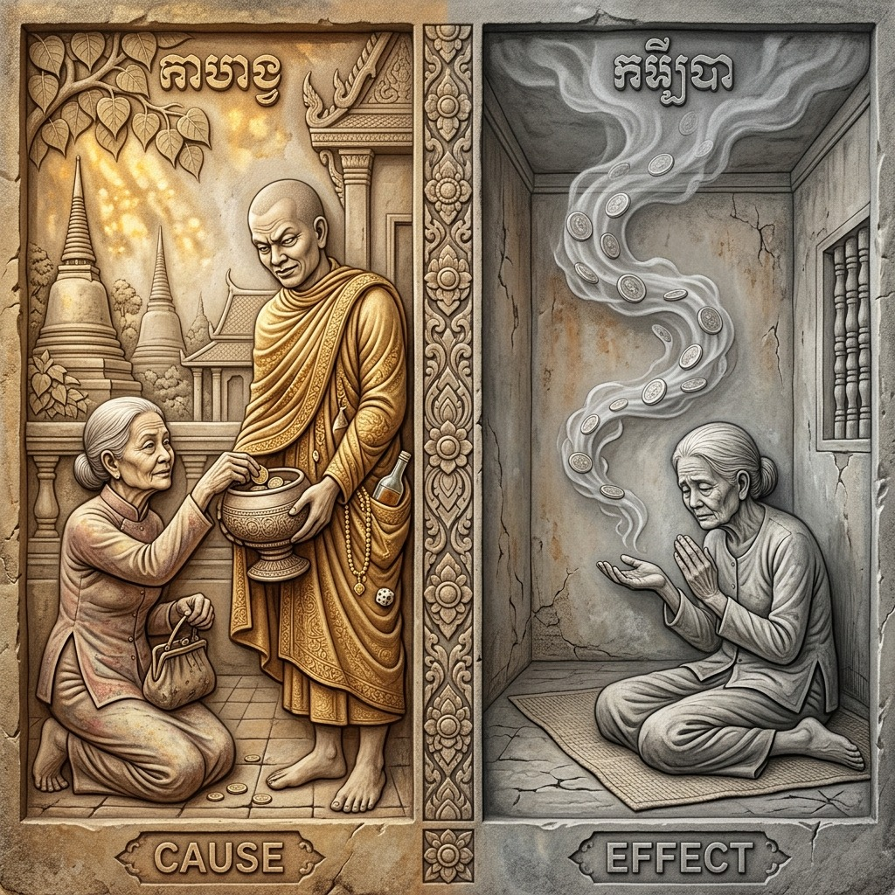
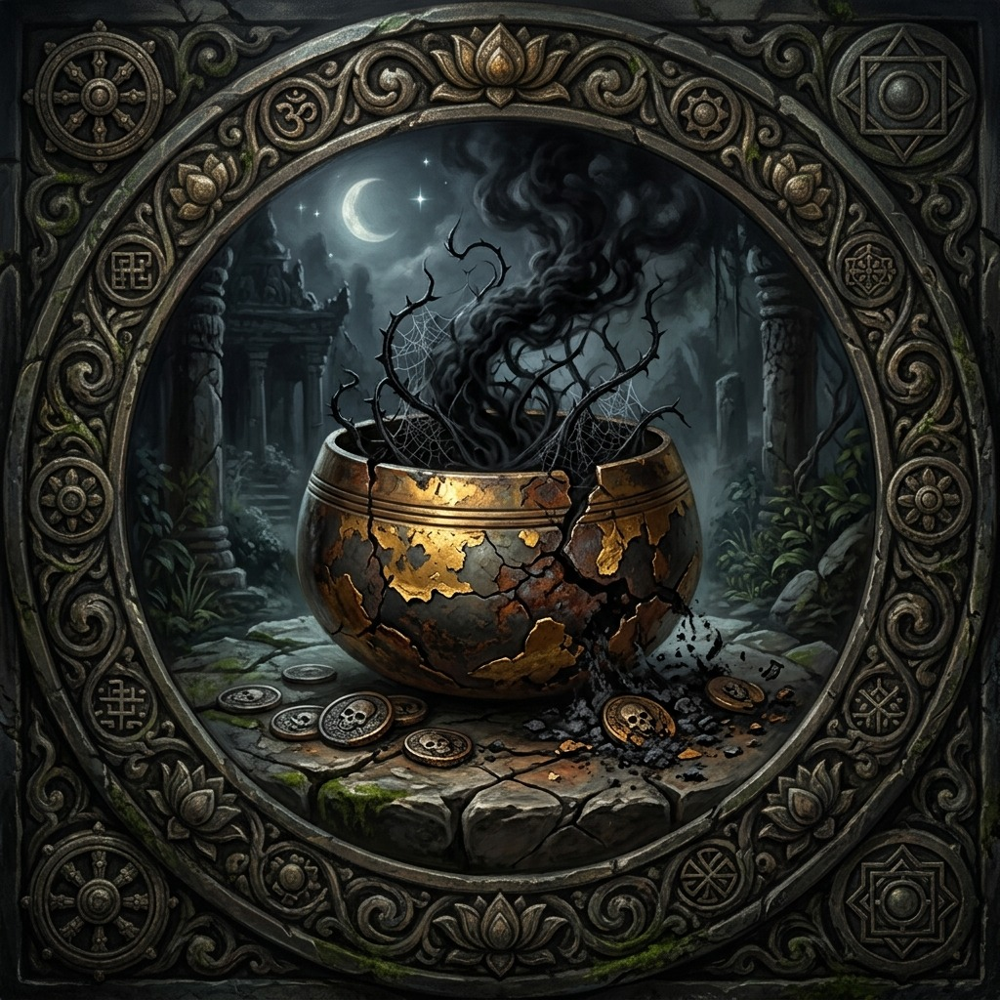
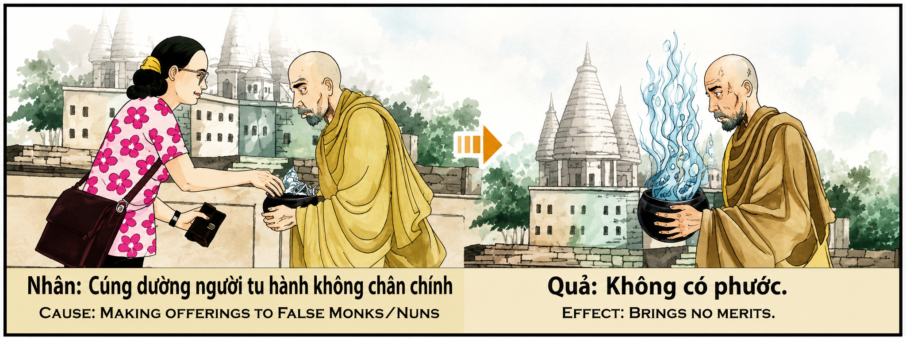

La Ofrenda al Impostor y el Mérito Vacío The Offering to the Impostor and the Empty Merit L'offerta all'impostore e il merito vuoto 冒名顶替者的供养与空功德 التقدمة للمحتال والاستحقاق الفارغ Подношение самозванцу и пустая заслуга Das Opfer für den Betrüger und das leere Verdienst L’offrande à l’imposteur et le mérite vide 詐欺師への供物と空の功績 A Oferenda ao Impostor e o Mérito Vazio Lễ Vật Cho Kẻ Giả Tu Và Công Đức Hư Không
"Quien deposita su oro en las manos del falso profeta no siembra en tierra fértil sino en arena movediza; pues la ofrenda entregada al impostor vestido de santidad se disuelve en el vacío sin generar mérito alguno, y el donante camina bajo un cielo desprovisto de estrellas kármicas, habiendo alimentado al lobo disfrazado de pastor." "He who places his gold in the hands of the false prophet does not sow in fertile soil but in quicksand; for the offering given to the impostor dressed in holiness dissolves into the void without generating any merit, and the donor walks beneath a sky stripped of karmic stars, having fed the wolf disguised as a shepherd." "Chi deposita il suo oro nelle mani del falso profeta non semina in un terreno fertile ma nelle sabbie mobili; perché l'offerta fatta all'impostore vestito di santità si dissolve nel vuoto senza generare alcun merito, e il donatore cammina sotto un cielo privo di stelle karmiche, avendo nutrito il lupo travestito da pastore." “凡是把黄金放在假先知手中的人，都不会在肥沃的土壤中播种，而是在流沙中播种；因为给冒充者的供品在圣洁的装扮下会溶解在虚空中，不会产生任何功德，而施主在没有业力星辰的天空下行走，喂养了伪装成牧羊人的狼。” "من يودع ذهبه في يد النبي الكذاب لا يزرع في تربة خصبة بل في الرمال المتحركة؛ فالتقدمة المقدمة للمحتال لابسًا القداسة تذوب في الفراغ دون أن تولد أي استحقاق، والمتبرع يسير تحت سماء خالية من النجوم الكارمية، بعد أن أطعم ذئبًا متنكرًا في زي راعي." «Кто отдает свое золото в руки лжепророка, тот сеет не в плодородную почву, а в зыбучий песок; ибо подношение, данное самозванцу, облаченному в святость, растворяется в пустоте, не производя никаких заслуг, и даритель ходит под небом, лишенным кармических звезд, накормив волка, переодетого пастырем». „Wer sein Gold in die Hände des falschen Propheten legt, sät nicht in fruchtbaren Boden, sondern in Treibsand; denn die Opfergabe, die dem in Heiligkeit gekleideten Betrüger gegeben wurde, löst sich in der Leere auf, ohne irgendeinen Verdienst hervorzubringen, und der Spender wandelt unter einem Himmel ohne karmische Sterne, nachdem er den als Hirten verkleideten Wolf gefüttert hat.“ " Celui qui dépose son or entre les mains du faux prophète ne sème pas dans un sol fertile mais dans des sables mouvants ; car l'offrande faite à l'imposteur vêtu de sainteté se dissout dans le vide sans générer aucun mérite, et le donateur marche sous un ciel dépourvu d'étoiles karmiques, après avoir nourri le loup déguisé en berger. " 「偽預言者の手に金を預ける者は、肥沃な土に蒔くのではなく、流砂に蒔くのである。なぜなら、聖性をまとった詐欺師に与えられた捧げ物は何の功徳も生み出さずに虚空に溶けてしまい、寄付者は羊飼いに扮したオオカミに餌を与えて、カルマの星のない空の下を歩くからである。」 “Quem deposita o seu ouro nas mãos do falso profeta não semeia em solo fértil, mas em areia movediça; pois a oferenda dada ao impostor vestido de santidade dissolve-se no vazio sem gerar qualquer mérito, e o doador caminha sob um céu desprovido de estrelas cármicas, tendo alimentado o lobo disfarçado de pastor.” "Kẻ đặt vàng vào tay tiên tri giả không gieo trên đất màu mỡ mà trên cát lún; bởi lễ vật dâng cho kẻ mạo danh khoác áo thánh thiện tan biến vào hư không mà không sinh công đức nào, và người hiến tặng bước đi dưới bầu trời trống rỗng không sao nghiệp, đã nuôi sống con sói đội lốt người chăn chiên."
El acto de dar limosna, ofrecer alimento o entregar recursos materiales a un monje, sacerdote o guía espiritual constituye, en la tradición kármica universal, uno de los canales más poderosos y eficientes para acumular mérito trascendental. Cuando el donante ofrece con corazón puro a un verdadero renunciante —alguien que ha abandonado las posesiones mundanas para dedicar su existencia al servicio desinteresado, a la meditación profunda y a la guía espiritual de los seres que sufren—, la energía de esa ofrenda se multiplica exponencialmente en el tejido invisible del karma. El mérito generado protege al donante durante generaciones, crea escudos kármicos contra las desgracias y abre portales de abundancia y sabiduría en vidas futuras.
Sin embargo, existe una trampa devastadora que puede anular por completo este mecanismo sagrado: la ofrenda al impostor. Un falso monje, un sacerdote fraudulento o un supuesto guía espiritual que ha adoptado los hábitos externos de la santidad —la túnica, el cuenco de limosnas, los mantras recitados de memoria, la cabeza rapada— pero que en su interior alberga codicia, lujuria, pereza o simple deseo de vivir sin trabajar, funciona como un «sumidero kármico»: absorbe la generosidad del donante pero no la transmuta en mérito, porque su recipiente espiritual está agrietado y contaminado. La energía sagrada de la ofrenda, al caer en un cuenco falso, se evapora instantáneamente como agua vertida sobre arena ardiente del desierto.
Es crucial comprender que este principio no castiga al donante inocente que fue engañado de buena fe. El karma reconoce la pureza de intención del que da con el corazón limpio. Pero el resultado práctico es devastadoramente estéril: la ofrenda no genera mérito. Es como plantar una semilla preciosa en un campo envenenado: por más noble que sea la semilla, el suelo corrupto la mata antes de que pueda germinar. El donante no pierde mérito existente ni acumula karma negativo por haber sido engañado; simplemente pierde la oportunidad irrecuperable de haber invertido ese recurso en un canal genuino que habría multiplicado su bendición cien veces.
La lección kármica profunda de este principio es la necesidad imperativa del discernimiento espiritual. La generosidad ciega, aunque noble en su impulso, es incompleta sin la sabiduría del ojo que observa y el corazón que discierne. Las escrituras nos invitan a examinar con serenidad y sin prejuicio: ¿Vive este guía en coherencia con lo que predica? ¿Sirve a los demás o se sirve a sí mismo? ¿Su cuenco alimenta a los hambrientos o engorda su propia vanidad? El verdadero mérito florece cuando la generosidad del corazón se une al discernimiento de la mente, canalizando los recursos hacia quienes genuinamente trabajan por el bienestar de todos los seres, hacia las causas que siembran luz real en el mundo y hacia los canales puros que transforman cada moneda en una estrella de protección eterna.
The act of giving alms, offering food, or delivering material resources to a monk, priest, or spiritual guide constitutes, in the universal karmic tradition, one of the most powerful and efficient channels for accumulating transcendental merit. When the donor offers with a pure heart to a true renunciant—someone who has abandoned worldly possessions to dedicate their existence to selfless service, deep meditation, and the spiritual guidance of suffering beings—the energy of that offering multiplies exponentially in the invisible fabric of karma. The merit generated protects the donor for generations, creates karmic shields against misfortune, and opens portals of abundance and wisdom in future lives.
However, there exists a devastating trap that can completely nullify this sacred mechanism: the offering to the impostor. A false monk, a fraudulent priest, or a supposed spiritual guide who has adopted the external trappings of holiness—the robe, the alms bowl, the mantras recited from memory, the shaved head—but who inwardly harbors greed, lust, laziness, or the simple desire to live without working, functions as a "karmic sinkhole": it absorbs the donor's generosity but does not transmute it into merit, because its spiritual vessel is cracked and contaminated. The sacred energy of the offering, upon falling into a false bowl, evaporates instantly like water poured onto the scorching sand of the desert.
It is crucial to understand that this principle does not punish the innocent donor who was deceived in good faith. Karma recognizes the purity of intention of those who give with a clean heart. But the practical result is devastatingly barren: the offering generates no merit. It is like planting a precious seed in a poisoned field: no matter how noble the seed, the corrupt soil kills it before it can germinate. The donor does not lose existing merit nor accumulate negative karma for having been deceived; they simply lose the irretrievable opportunity of having invested that resource in a genuine channel that would have multiplied their blessing a hundredfold.
The profound karmic lesson of this principle is the imperative necessity of spiritual discernment. Blind generosity, though noble in its impulse, is incomplete without the wisdom of the observing eye and the discerning heart. The scriptures invite us to examine with serenity and without prejudice: Does this guide live in coherence with what they preach? Do they serve others or serve themselves? Does their bowl feed the hungry or fatten their own vanity? True merit flourishes when the generosity of the heart unites with the discernment of the mind, channeling resources toward those who genuinely work for the welfare of all beings, toward causes that sow real light in the world, and toward pure channels that transform each coin into a star of eternal protection.
Tl'atto di fare l'elemosina, offrire cibo o consegnare risorse materiali a un monaco, sacerdote o guida spirituale costituisce, nella tradizione karmica universale, uno dei canali più potenti ed efficienti per accumulare meriti trascendentali. Quando il donatore si offre con cuore puro a un vero rinunciante – qualcuno che ha abbandonato i beni terreni per dedicare la sua esistenza al servizio disinteressato, alla meditazione profonda e alla guida spirituale degli esseri sofferenti – l'energia di quell'offerta si moltiplica esponenzialmente nel tessuto invisibile del karma. Il merito generato protegge il donatore per generazioni, crea scudi karmici contro la sfortuna e apre portali di abbondanza e saggezza nelle vite future.
Esiste però una trappola devastante che può annullare completamente questo meccanismo sacro: l’offerta all’impostore. Un falso monaco, un prete fraudolento o una presunta guida spirituale che ha adottato le abitudini esteriori della santità - la veste, la ciotola per l'elemosina, i mantra recitati a memoria, la testa rasata - ma che nutre avidità, lussuria, pigrizia o il semplice desiderio di vivere senza lavorare, funziona come un "lavabo karmico": assorbe la generosità del donatore ma non la trasmuta in merito, perché il suo vaso spirituale è incrinato e contaminato. L'energia sacra dell'offerta, cadendo in una falsa coppa, evapora istantaneamente come l'acqua versata sulla sabbia ardente del deserto.
È fondamentale comprendere che questo principio non punisce il donatore innocente che è stato ingannato in buona fede. Il karma riconosce la purezza delle intenzioni del donatore con un cuore puro. Ma il risultato pratico è terribilmente sterile: l’offerta non genera merito. È come piantare un seme prezioso in un campo avvelenato: per quanto nobile sia il seme, il terreno corrotto lo uccide prima che possa germogliare. Il donatore non perde i meriti esistenti né accumula karma negativo per essere stato ingannato; semplicemente perdi l’irrecuperabile opportunità di aver investito quella risorsa in un canale autentico che avrebbe centuplicato la tua benedizione.
La profonda lezione karmica di questo principio è la necessità imperativa del discernimento spirituale. La generosità cieca, benché nobile nel suo impulso, è incompleta senza la saggezza dell'occhio che osserva e del cuore che discerne. Le Scritture ci invitano ad esaminare con serenità e senza pregiudizi: questa guida vive in coerenza con ciò che predica? Servi gli altri o servi te stesso? La tua ciotola nutre gli affamati o ingrassa la tua vanità? Il vero merito fiorisce quando la generosità del cuore si unisce al discernimento della mente, incanalando le risorse verso chi lavora genuinamente per il benessere di tutti gli esseri, verso le cause che seminano la vera luce nel mondo e verso i canali puri che trasformano ogni moneta in una stella di eterna protezione.
T向僧侣、牧师或精神导师施舍、提供食物或提供物质资源的行为，在普遍的业力传统中，是积累超然功德的最强大和最有效的渠道之一。当施主以一颗纯洁的心向真正的出家人（一个放弃世俗财产，将自己的存在奉献给受苦众生的无私服务、深度冥想和精神指导的人）供养时，这种供养的能量就会在无形的业力结构中成倍增加。所产生的功德可以保护布施者世世代代，创造抵御不幸的业力护盾，并在来世打开丰盛和智慧的大门。
然而，有一个毁灭性的陷阱可以完全消除这一神圣机制：向冒名顶替者提供祭品。一个假和尚、一个欺诈的牧师或一个所谓的精神导师，他们采用了圣洁的外在习惯——袈裟、钵、背诵咒语、剃光头——但内心怀有贪婪、色欲、懒惰或不工作而生活的简单愿望，充当“业力水槽”：他吸收了施主的慷慨，但没有将其转化为功德，因为他的精神容器已经破裂和污染。供品的神圣能量落入假碗中，立即蒸发，就像水倒在燃烧的沙漠上一样。
重要的是要明白，这一原则不会惩罚善意受骗的无辜捐赠者。业力以一颗洁净的心来认识给予者意图的纯洁性。但实际的结果是毁灭性的：布施不会产生功德。这就像在有毒的田地里种下一粒珍贵的种子一样：无论这颗种子多么高贵，腐败的土壤都会在它发芽之前将其杀死。布施者不会因被欺骗而失去已有的功德或累积恶业；你只是失去了不可挽回的机会，将资源投入到一个真正的渠道中，这将使你的祝福成倍增加。
这一原则的深刻业力教训是，迫切需要灵性洞察力。盲目的慷慨虽然其冲动是崇高的，但如果没有智慧的观察之眼和辨别之心，它是不完整的。经文邀请我们平静地、不带偏见地审视：这个指南的生活与他所宣讲的是否一致？你是为别人服务还是为自己服务？你的碗是填饱饥饿的人还是满足你自己的虚荣心？当内心的慷慨与心灵的洞察相结合，将资源引导到那些真正为一切众生的福祉而努力的人，引导到在世界上播下真正的光明的事业，引导到将每一枚硬币转变成永恒保护之星的纯净渠道时，真正的功德就会蓬勃发展。
Tإن فعل تقديم الصدقات أو تقديم الطعام أو توصيل الموارد المادية إلى راهب أو كاهن أو مرشد روحي يشكل، في التقليد الكرمي العالمي، إحدى أقوى القنوات وأكثرها كفاءة لتجميع الجدارة المتعالية. عندما يقدم المتبرع بقلب نقي إلى متخلى حقيقي - شخص تخلى عن ممتلكاته الدنيوية ليكرس وجوده للخدمة غير الأنانية، والتأمل العميق، والإرشاد الروحي للكائنات المتألمة - فإن طاقة هذا العرض تتضاعف بشكل كبير في نسيج الكارما غير المرئي. إن الجدارة المتولدة تحمي المعطي لأجيال، وتخلق دروعًا كارمية ضد سوء الحظ، وتفتح بوابات الوفرة والحكمة في الحياة المستقبلية.
ومع ذلك، هناك فخ مدمر يمكن أن يبطل تماما هذه الآلية المقدسة: التقدمة إلى الدجال. الراهب الكاذب، الكاهن المحتال أو المرشد الروحي المفترض الذي يتبنى عادات القداسة الخارجية - الرداء، وعاء الصدقات، التغني عن ظهر قلب، الرأس المحلوق - ولكن الذي يضمر الجشع أو الشهوة أو الكسل أو الرغبة البسيطة في العيش بدون عمل، يعمل بمثابة "بالوعة كارمية": يمتص كرم المانح لكنه لا يحوله إلى استحقاق، لأن وعاءه الروحي مشقق وملوث. تتبخر الطاقة المقدسة للتقدمة، التي تسقط في وعاء زائف، على الفور مثل الماء المسكوب على رمال الصحراء المحترقة.
ومن الأهمية بمكان أن نفهم أن هذا المبدأ لا يعاقب المتبرع البريء الذي خدع بحسن نية. تعترف الكارما بنقاء نية المعطي بقلب نظيف. ولكن النتيجة العملية عقيمة على نحو مدمر: فالتقدمة لا تولد الجدارة. إنه مثل زرع بذرة ثمينة في حقل مسموم: مهما كانت البذرة نبيلة، فإن التربة الفاسدة تقتلها قبل أن تنبت. لا يفقد المانح الجدارة الحالية أو يتراكم الكارما السلبية بسبب خداعه؛ إنك ببساطة تخسر الفرصة التي لا يمكن استردادها المتمثلة في استثمار هذا المورد في قناة حقيقية من شأنها أن تضاعف بركتك مائة ضعف.
إن الدرس الكرمي العميق لهذا المبدأ هو الحاجة الحتمية للتمييز الروحي. فالكرم الأعمى، وإن كان نبيلاً في دافعه، لا يكتمل إلا بحكمة العين التي ترى والقلب الذي يميز. تدعونا الكتب المقدسة إلى الفحص بهدوء ودون تحيز: هل يعيش هذا المرشد في انسجام مع ما يعظ به؟ هل تخدم الآخرين أم تخدم نفسك؟ هل وعاءك يطعم الجائع أم يسمن غرورك؟ تزدهر الجدارة الحقيقية عندما ينضم سخاء القلب إلى تمييز العقل، وتوجيه الموارد نحو أولئك الذين يعملون بصدق من أجل خير جميع الكائنات، نحو الأسباب التي تزرع النور الحقيقي في العالم ونحو القنوات النقية التي تحول كل عملة إلى نجم الحماية الأبدية.
Tподача милостыни, предложение еды или доставка материальных ресурсов монаху, священнику или духовному наставнику представляет собой в универсальной кармической традиции один из самых мощных и эффективных каналов накопления трансцендентных заслуг. Когда даритель с чистым сердцем предлагает истинному отречению – тому, кто отказался от мирских благ, чтобы посвятить свое существование бескорыстному служению, глубокой медитации и духовному руководству страдающими существами, – энергия этого подношения умножается в геометрической прогрессии в невидимой ткани кармы. Созданные заслуги защищают дающего на протяжении поколений, создают кармические щиты от несчастий и открывают порталы изобилия и мудрости в будущих жизнях.
Однако есть разрушительная ловушка, которая может полностью свести на нет этот священный механизм: подношение самозванцу. Лжемонах, мошенник-священник или предполагаемый духовный наставник, перенявший внешние привычки святости – мантию, чашу для подаяний, мантры, читаемые наизусть, бритые головы – но питающий жадность, похоть, лень или простое желание жить, не работая, действует как «кармическая раковина»: он поглощает щедрость дарителя, но не превращает ее в заслуги, потому что его духовный сосуд треснут и загрязнен. Священная энергия подношения, попадая в ложную чашу, моментально испаряется, как вода, вылитая на раскаленный песок пустыни.
Крайне важно понимать, что этот принцип не наказывает невиновного донора, который был добросовестно обманут. Карма признает чистоту намерения дающего с чистым сердцем. Но практический результат опустошительно бесплоден: подношение не приносит заслуг. Это похоже на посадку драгоценного семени на отравленное поле: каким бы благородным ни было семя, испорченная почва убивает его, прежде чем оно сможет прорасти. Дающий не теряет имеющихся заслуг и не накапливает негативную карму из-за того, что был обманут; вы просто теряете безвозвратную возможность вложить этот ресурс в настоящий канал, который умножил бы ваше благословение во сто крат.
Глубокий кармический урок этого принципа – настоятельная потребность в духовном различении. Слепая щедрость, хотя и благородная по своему порыву, неполна без мудрости наблюдающего глаза и проницательного сердца. Священные Писания предлагают нам спокойно и без предубеждений рассмотреть вопрос: живет ли этот наставник в соответствии с тем, что он проповедует? Служишь ли ты другим или служишь себе? Ваша миска кормит голодных или утешает ваше тщеславие? Истинные заслуги расцветают, когда щедрость сердца соединяется с проницательностью ума, направляя ресурсы к тем, кто искренне работает на благо всех существ, к причинам, которые сеют настоящий свет в мире, и к чистым каналам, которые превращают каждую монету в звезду вечной защиты.
DDer Akt des Almosengebens, Anbietens von Essen oder der Übergabe materieller Ressourcen an einen Mönch, Priester oder spirituellen Führer stellt in der universellen karmischen Tradition einen der mächtigsten und effizientesten Kanäle dar, um transzendentale Verdienste anzusammeln. Wenn der Spender mit reinem Herzen einem echten Entsagenden etwas schenkt – jemandem, der weltlichen Besitz aufgegeben hat, um seine Existenz dem selbstlosen Dienst, der tiefen Meditation und der spirituellen Führung leidender Wesen zu widmen –, vervielfacht sich die Energie dieser Gabe im unsichtbaren Gefüge des Karmas exponentiell. Die erzeugten Verdienste schützen den Geber über Generationen hinweg, schaffen karmische Schutzschilde gegen Unglück und öffnen Tore der Fülle und Weisheit in zukünftigen Leben.
Es gibt jedoch eine verheerende Falle, die diesen heiligen Mechanismus völlig zunichte machen kann: die Opfergabe an den Betrüger. Ein falscher Mönch, ein betrügerischer Priester oder ein angeblicher spiritueller Führer, der die äußeren Gewohnheiten der Heiligkeit übernommen hat – das Gewand, die Almosenschale, die auswendig rezitierten Mantras, den rasierten Kopf –, der aber Gier, Lust, Faulheit oder den einfachen Wunsch hegt, ohne Arbeit zu leben, fungiert als „karmische Senke“: Er nimmt die Großzügigkeit des Spenders auf, wandelt sie aber nicht in Verdienst um, weil sein spirituelles Gefäß gesprungen und verunreinigt ist. Die heilige Energie des Opfers verdunstet augenblicklich, wenn es in eine falsche Schale fällt, wie Wasser, das auf brennenden Wüstensand gegossen wird.
Es ist wichtig zu verstehen, dass dieser Grundsatz nicht den unschuldigen Spender bestraft, der in gutem Glauben getäuscht wurde. Karma erkennt die Reinheit der Absicht des Gebers mit reinem Herzen. Aber das praktische Ergebnis ist erschreckend unfruchtbar: Das Opfer erzeugt keinen Verdienst. Es ist, als würde man einen kostbaren Samen in ein vergiftetes Feld pflanzen: Egal wie edel der Samen ist, der verdorbene Boden tötet ihn ab, bevor er keimen kann. Der Geber verliert weder vorhandene Verdienste noch sammelt er negatives Karma an, weil er getäuscht wurde. Sie verpassen einfach die unwiederbringliche Chance, diese Ressource in einen echten Kanal investiert zu haben, der Ihren Segen verhundertfacht hätte.
Die tiefgreifende karmische Lektion dieses Prinzips ist das zwingende Bedürfnis nach spiritueller Unterscheidung. Blinde Großzügigkeit, auch wenn ihr Impuls edel ist, ist ohne die Weisheit des beobachtenden Auges und des unterscheidenden Herzens unvollständig. Die heiligen Schriften laden uns ein, mit Gelassenheit und ohne Vorurteile zu prüfen: Lebt dieser Führer im Einklang mit dem, was er predigt? Dienen Sie anderen oder dienen Sie sich selbst? Füttert Ihr Napf die Hungrigen oder macht er Ihren eigenen Eitelkeit satt? Wahre Verdienste gedeihen, wenn sich die Großzügigkeit des Herzens mit der Urteilskraft des Geistes verbindet und Ressourcen in Richtung derjenigen lenkt, die sich wirklich für das Wohlergehen aller Lebewesen einsetzen, in Richtung der Ursachen, die wahres Licht in die Welt säen, und in Richtung der reinen Kanäle, die jede Münze in einen Stern des ewigen Schutzes verwandeln.
Tl'acte de faire l'aumône, d'offrir de la nourriture ou de livrer des ressources matérielles à un moine, un prêtre ou un guide spirituel constitue, dans la tradition karmique universelle, l'un des canaux les plus puissants et les plus efficaces pour accumuler du mérite transcendantal. Lorsque le donateur offre avec un cœur pur à un véritable renonçant – quelqu'un qui a abandonné ses possessions matérielles pour consacrer son existence au service désintéressé, à la méditation profonde et à la direction spirituelle des êtres souffrants – l'énergie de cette offrande est multipliée de façon exponentielle dans le tissu invisible du karma. Le mérite généré protège celui qui donne pendant des générations, crée des boucliers karmiques contre le malheur et ouvre des portails d’abondance et de sagesse dans les vies futures.
Il existe cependant un piège dévastateur qui peut complètement annuler ce mécanisme sacré : l’offrande à l’imposteur. Un faux moine, un prêtre frauduleux ou un prétendu guide spirituel qui a adopté les habitudes extérieures de sainteté - la robe, le bol d'aumône, les mantras récités par cœur, le crâne rasé - mais qui abrite l'avidité, la luxure, la paresse ou le simple désir de vivre sans travailler, fonctionne comme un « puits karmique » : il absorbe la générosité du donateur mais ne la transmue pas en mérite, car son vaisseau spirituel est fissuré et contaminé. L'énergie sacrée de l'offrande, tombant dans un faux bol, s'évapore instantanément comme de l'eau versée sur le sable brûlant du désert.
Il est crucial de comprendre que ce principe ne punit pas le donneur innocent qui a été trompé de bonne foi. Le karma reconnaît la pureté de l'intention du donateur au cœur pur. Mais le résultat pratique est terriblement stérile : l’offrande ne génère pas de mérite. C’est comme planter une graine précieuse dans un champ empoisonné : si noble que soit la graine, le sol corrompu la tue avant qu’elle puisse germer. Celui qui donne ne perd pas le mérite existant et n’accumule pas de karma négatif pour avoir été trompé ; vous perdez simplement l’opportunité irrécupérable d’avoir investi cette ressource dans un véritable canal qui aurait multiplié par cent votre bénédiction.
La profonde leçon karmique de ce principe est le besoin impératif d’un discernement spirituel. La générosité aveugle, bien que noble dans son élan, est incomplète sans la sagesse de l’œil qui observe et du cœur qui discerne. Les Écritures nous invitent à examiner avec sérénité et sans préjugés : ce guide vit-il en cohérence avec ce qu'il prêche ? Servez-vous les autres ou vous-même ? Votre bol nourrit-il les affamés ou engraisse-t-il votre propre vanité ? Le vrai mérite s'épanouit lorsque la générosité du cœur s'associe au discernement de l'esprit, canalisant les ressources vers ceux qui travaillent véritablement pour le bien-être de tous les êtres, vers les causes qui sèment la vraie lumière dans le monde et vers les canaux purs qui transforment chaque pièce de monnaie en une étoile de protection éternelle.
T僧侶、聖職者、またはスピリチュアルな指導者に施しをしたり、食べ物を提供したり、物資を届けたりする行為は、普遍的なカルマの伝統において、超越的な功徳を蓄積するための最も強力で効率的な手段の 1 つを構成します。寄付者が純粋な心で真の放棄者、つまり世俗的な所有物を捨てて無私の奉仕、深い瞑想、苦しむ人々への霊的指導に自分の存在を捧げた人に捧げるとき、その捧げ物のエネルギーはカルマという目に見えない構造の中で指数関数的に増幅されます。生み出された功徳は、贈り主を何世代にもわたって守り、不幸に対するカルマの盾を作り、将来の人生に豊かさと知恵の入り口を開きます。
しかし、この神聖な仕組みを完全に無効化できる壊滅的な罠があります。それは、詐欺師への捧げものです。偽僧侶、詐欺僧侶、または聖性の外的習慣（ローブ、托鉢、暗唱マントラ、坊主頭）を身に着けているが、貪欲、情欲、怠惰、あるいは働かずに生きたいという単純な願望を抱いている偽僧侶、詐欺師、またはスピリチュアルガイドと称する者は、「カルマシンク」として機能します。その人は寄付者の寛大さを吸収しますが、それを功徳に変えることはありません。なぜなら、彼の精神的な器はひび割れて汚染されているからです。偽のボウルに落ちた捧げ物の神聖なエネルギーは、燃える砂漠の砂に注がれた水のように瞬時に蒸発します。
この原則は、善意で騙された無実のドナーを罰するものではないことを理解することが重要です。カルマは、純粋な心を持つ贈り主の意図の純粋さを認識します。しかし、実際の結果は壊滅的に不毛なものであり、捧げ物は功徳を生みません。それは、毒を盛られた畑に貴重な種を植えるようなものです。どんなに立派な種でも、腐敗した土壌によって発芽する前に死んでしまいます。与える人は、騙されたことで既存の功績を失ったり、マイナスのカルマを蓄積したりしません。あなたは、あなたの祝福を100倍にするであろう本物のチャンネルにそのリソースを投資するという取り返しのつかない機会を失うだけです。
この原則のカルマの深い教訓は、霊的な識別が不可欠であるということです。盲目的な寛大さは、その衝動は崇高ですが、観察する目と識別する心の知恵がなければ不完全です。聖文は、偏見を持たずに冷静に検討するよう私たちに勧めています。このガイドは彼の説教と一致しているでしょうか?あなたは他人に奉仕しますか、それとも自分自身に奉仕しますか？あなたのボウルは飢えた人々を養いますか、それともあなた自身の虚栄心を肥大させますか？真の功徳は、心の寛大さが心の洞察力と結びつき、すべての存在の幸福のために真に働く人々、世界に真の光を蒔く大義、そして各コインを永遠の保護の星に変える純粋な経路に資源を注ぎ込むときに開花します。
To ato de dar esmola, oferecer comida ou entregar recursos materiais a um monge, sacerdote ou guia espiritual constitui, na tradição cármica universal, um dos canais mais poderosos e eficientes para acumular mérito transcendental. Quando o doador oferece com um coração puro a um verdadeiro renunciante – alguém que abandonou os bens mundanos para dedicar sua existência ao serviço altruísta, à meditação profunda e à orientação espiritual dos seres sofredores – a energia dessa oferta é multiplicada exponencialmente na estrutura invisível do carma. O mérito gerado protege o doador por gerações, cria escudos cármicos contra o infortúnio e abre portais de abundância e sabedoria em vidas futuras.
Porém, existe uma armadilha devastadora que pode anular completamente este mecanismo sagrado: a oferenda ao impostor. Um falso monge, um sacerdote fraudulento ou um suposto guia espiritual que adotou os hábitos externos de santidade – o manto, a tigela de esmolas, os mantras recitados de cor, a cabeça raspada – mas que abriga a ganância, a luxúria, a preguiça ou o simples desejo de viver sem trabalhar, funciona como um “pia cármica”: absorve a generosidade do doador, mas não a transmuta em mérito, porque seu vaso espiritual está rachado e contaminado. A energia sagrada da oferenda, caindo em uma tigela falsa, evapora instantaneamente como a água derramada na areia ardente do deserto.
É fundamental compreender que este princípio não pune o doador inocente que foi enganado de boa fé. O Karma reconhece a pureza da intenção do doador com um coração limpo. Mas o resultado prático é devastadoramente estéril: a oferta não gera mérito. É como plantar uma semente preciosa num campo envenenado: não importa quão nobre seja a semente, o solo corrupto a mata antes que ela possa germinar. O doador não perde o mérito existente nem acumula carma negativo por ter sido enganado; você simplesmente perde a oportunidade irrecuperável de ter investido esse recurso em um canal genuíno que teria multiplicado cem vezes sua bênção.
A profunda lição cármica deste princípio é a necessidade imperiosa de discernimento espiritual. A generosidade cega, embora nobre em seu impulso, é incompleta sem a sabedoria do olho que observa e do coração que discerne. As escrituras nos convidam a examinar com serenidade e sem preconceitos: Será que este guia vive em coerência com o que prega? Você serve aos outros ou serve a si mesmo? A sua tigela alimenta os famintos ou engorda a sua própria vaidade? O verdadeiro mérito floresce quando a generosidade do coração se une ao discernimento da mente, canalizando recursos para aqueles que genuinamente trabalham pelo bem-estar de todos os seres, para as causas que semeiam a verdadeira luz no mundo e para os canais puros que transformam cada moeda numa estrela de proteção eterna.
Hành động bố thí, cúng dường thức ăn hay dâng hiến tài vật cho một vị tu sĩ, linh mục hay bậc hướng đạo tâm linh, theo truyền thống nghiệp quả phổ quát, là một trong những kênh mạnh mẽ và hiệu quả nhất để tích lũy công đức siêu việt. Khi người cúng dường với tấm lòng thanh tịnh dâng hiến cho một bậc chân tu — người đã buông bỏ tài sản thế gian để dành trọn cuộc đời phụng sự vô ngã, thiền định sâu sắc và hướng dẫn tâm linh cho chúng sinh đau khổ — năng lượng của lễ vật ấy được nhân lên theo cấp số nhân trong tấm vải vô hình của nghiệp quả. Công đức sinh ra bảo vệ người cúng dường qua nhiều thế hệ, tạo lá chắn nghiệp chống lại tai ương và mở ra cánh cổng sung túc cùng trí tuệ trong các kiếp sống tương lai.
Tuy nhiên, tồn tại một cái bẫy tàn khốc có thể vô hiệu hóa hoàn toàn cơ chế thiêng liêng này: lễ vật dâng cho kẻ giả tu. Một vị sư giả, một linh mục lừa đảo, hay một người tự xưng là hướng đạo tâm linh đã khoác lên mình vẻ ngoài thánh thiện — chiếc áo cà sa, bình bát khất thực, những bài kinh đọc thuộc lòng, cái đầu cạo trọc — nhưng bên trong chất chứa lòng tham, dục vọng, lười biếng hoặc đơn giản là ham muốn sống mà không cần lao động, hoạt động như một «hố đen nghiệp quả»: nó hút lấy sự hào phóng của người cúng dường nhưng không chuyển hóa thành công đức, bởi bình chứa tâm linh của kẻ ấy đã nứt vỡ và ô nhiễm. Năng lượng thiêng liêng của lễ vật, khi rơi vào bình bát giả, bốc hơi tức khắc như nước đổ lên cát sa mạc nóng bỏng.
Điều quan trọng cần hiểu rằng nguyên tắc này không trừng phạt người cúng dường ngây thơ bị lừa dối một cách thiện chí. Nghiệp quả nhận ra sự thuần khiết trong ý định của người cho đi với tấm lòng thanh sạch. Nhưng kết quả thực tế thì hoang vắng tàn khốc: lễ vật không sinh ra công đức. Giống như gieo một hạt giống quý giá trên cánh đồng bị đầu độc: dù hạt giống cao quý đến đâu, đất đai hư hỏng sẽ giết chết nó trước khi kịp nảy mầm. Người cúng dường không mất đi công đức hiện có cũng không tích tụ nghiệp xấu vì bị lừa; họ chỉ đánh mất cơ hội không thể lấy lại để đầu tư nguồn lực ấy vào một kênh chân chính đáng lẽ đã nhân bội phước lành lên gấp trăm lần.
Bài học nghiệp quả sâu sắc của nguyên tắc này là sự cần thiết bức bách của trí tuệ phân biệt. Lòng hào phóng mù quáng, dù cao thượng trong xung lực, vẫn chưa trọn vẹn nếu thiếu trí tuệ của con mắt quan sát và trái tim sáng suốt. Kinh điển mời gọi chúng ta khảo sát bằng sự thanh thản và không thành kiến: Vị hướng đạo này có sống nhất quán với những gì họ thuyết giảng không? Họ phụng sự người khác hay phục vụ chính mình? Bình bát của họ nuôi người đói hay vỗ béo sự hư danh của riêng họ? Công đức thực sự nở hoa khi lòng hào phóng của trái tim hợp nhất với trí tuệ phân biệt của tâm trí, dẫn dắt nguồn lực hướng tới những ai chân thành làm việc vì an lạc của muôn loài, hướng tới những mục đích gieo ánh sáng thực sự trong thế gian, và hướng tới những kênh thanh tịnh biến mỗi đồng xu thành một vì sao bảo hộ vĩnh cửu.
El Cuenco Dorado y el Pozo de Cenizas
The Golden Bowl and the Well of Ashes
La Coppa d'Oro e la Fossa di Cenere
金碗和灰坑
الوعاء الذهبي وحفرة الرماد
Золотая чаша и зольная яма
Die Goldene Schale und die Aschengrube
Le Bol d'Or et le Cendrier
ゴールデンボウルとアッシュピット
A Taça Dourada e o Poço de Cinzas
Bình Bát Vàng Và Giếng Tro Tàn
En la antigua ciudad amurallada de Sirivana, donde los templos de piedra blanca se alzaban como columnas de luz sobre los arrozales esmeralda, vivía Mei, una humilde costurera viuda de sesenta y tres años que había criado sola a sus cuatro hijos remendando ropas ajenas bajo la luz de una lámpara de aceite. Mei era una mujer de fe profunda y de corazón inmensamente generoso: cada luna llena, sin falta, apartaba cuidadosamente la décima parte de sus miserables ganancias —a veces apenas unas monedas de cobre— y las depositaba con devoción silenciosa en el cuenco de limosnas de los monjes que recorrían las calles al amanecer. Mei creía con toda el alma que cada moneda ofrecida a un monje virtuoso ascendía directamente al cielo como una estrella de protección para sus hijos y para su difunto esposo. Aquellas ofrendas eran su tesoro más precioso, más valioso que la comida misma que a veces dejaba de comer para poder dar.
Una mañana de monzón, mientras el cielo derramaba cortinas de lluvia tibia, un monje imponente y carismático llamado Devadara llegó a Sirivana. Vestía una túnica azafrán inmaculada de seda bordada con hilos de oro; su cabeza rapada brillaba como bronce pulido, y su voz profunda resonaba como un gong ceremonial. Devadara se instaló en el templo abandonado de las afueras y comenzó a predicar sermones hipnóticos que atraían multitudes. Hablaba de los ciclos cósmicos, de la iluminación instantánea y de las bendiciones infinitas que recibiría quien le ofrendara con generosidad. Las monedas llovían en su cuenco dorado. Mei, cautivada por su elocuencia y convencida de haber encontrado al monje más santo de su vida, comenzó a entregarle no la décima parte, sino la mitad de sus ganancias. Dejó de comer almuerzo para poder darle más. Le cosió túnicas gratuitas con la mejor tela que jamás había tocado. Le llevaba arroz caliente al amanecer, caminando dos kilómetros bajo la lluvia, descalza sobre el barro.
Lo que Mei no podía ver —ni nadie en Sirivana— era lo que ocurría tras las puertas cerradas del templo abandonado. Cada noche, cuando los fieles se retiraban, Devadara se quitaba la túnica sagrada, se vestía con ropas de comerciante y descendía por un pasadizo secreto a una bodega oculta. Allí, rodeado de sacos de arroz robado, botellas de licor de palma y dados de marfil para las apuestas, contaba las monedas del día con una sonrisa cínica. Devadara no era un monje: era un estafador de profesión que había memorizado los sutras como un actor memoriza su guion, que había aprendido a caminar con la lentitud solemne del renunciante y a recitar mantras con una perfección técnica que engañaba incluso a los más devotos. Jamás había meditado un solo día de su vida. Jamás había sentido compasión por un ser viviente. Su cuenco dorado era un teatro perfecto: reluciente por fuera, hueco y negro por dentro.
Un anciano peregrino ciego llamado Sonam, que recorría los caminos de la región guiado únicamente por su bastón y por una sensibilidad espiritual extraordinaria, llegó a Sirivana una tarde de verano. Sonam no podía ver los ropajes dorados de Devadara ni su cabeza reluciente, pero podía sentir la energía de los seres con una claridad que ningún ojo humano poseía. Al acercarse al templo donde predicaba Devadara, el anciano ciego se detuvo en seco y una sombra de tristeza profunda cubrió su rostro arrugado. Buscó a Mei y le tomó las manos con delicadeza infinita: «Hija mía —le dijo con voz temblorosa—, el cuenco al que entregas tus ofrendas no tiene fondo. Es una vasija sin alma. Cada moneda que depositas cae directamente al vacío y se convierte en ceniza antes de tocar el suelo del cielo. No te estoy pidiendo que dejes de dar; te estoy suplicando que aprendas a mirar con el corazón antes de dar. Busca al monje que come menos que tú, al que duerme en el suelo más duro, al que llora cuando un animal sufre. Ahí encontrarás el cuenco verdadero.»
Mei, confundida y herida, no quiso creer al anciano. Continuó ofrendando a Devadara durante tres meses más, entregándole sus últimos ahorros para la medicina de su hija menor, que había enfermado de fiebre. Devadara aceptó el dinero con una reverencia teatral y lo gastó esa misma noche en una partida de dados. La niña de Mei empeoró gravemente. Una madrugada, mientras Mei caminaba descalza bajo la tormenta llevando el arroz del amanecer al templo, encontró la puerta trasera entreabierta. Lo que vio al asomarse la destrozó como un rayo: Devadara, vestido de comerciante, borracho, contando montañas de monedas entre botellas vacías y dados de marfil, riéndose con otros dos cómplices que también vestían túnicas de monje guardadas en un rincón. Mei dejó caer el cuenco de arroz al suelo. Sus rodillas cedieron. No lloró de rabia ni de odio, sino de una pena infinita y oceánica: comprendió que años de sacrificio, de hambre voluntaria, de noches sin cenar para poder ofrendar, se habían evaporado en el vacío absoluto sin generar una sola estrella de protección para sus hijos. El cielo sobre su cabeza estaba desnudo de mérito.
Temblando, Mei se arrastró hasta la choza del anciano Sonam, que dormía bajo un árbol de bodhi en las afueras del pueblo. Se derrumbó ante él llorando con un dolor que parecía salir de la raíz más profunda de su alma. Sonam la abrazó con sus brazos delgados y la meció como a una niña. «No llores por las monedas perdidas, hija mía —susurró—. El cielo vio tu corazón puro cada vez que diste. Tu intención era una estrella luminosa, pero cayó en un pozo de cenizas. Ahora tus ojos se han abierto, y con ellos se abre un camino nuevo.» Al día siguiente, Sonam guió a Mei hasta una cueva oculta en las montañas donde vivía una monja anciana y verdadera llamada Amma, que subsistía comiendo raíces silvestres y dedicaba sus días a curar gratuitamente a los enfermos del valle con hierbas medicinales y oraciones. Amma vestía un hábito remendado tantas veces que ya no tenía color original, y su cuenco de barro estaba agrietado y reparado con resina de árbol. Mei miró a Amma a los ojos y por primera vez en su vida reconoció la luz inconfundible de la autenticidad: una llama serena, sin brillo exterior, pero cálida como el sol del mediodía. Mei ofreció a Amma su último puñado de arroz con las manos temblorosas. Amma lo aceptó con una reverencia sincera, partió los granos en dos mitades iguales, y devolvió la mitad a Mei diciendo: «Tú necesitas comer tanto como yo. La verdadera ofrenda es la que no deja vacío al que da.» En ese instante, Mei sintió por primera vez que algo invisible y luminoso ascendía desde su pecho hacia el cielo: una pequeña estrella temblorosa, la primera estrella real de mérito kármico en años de ofrendas, nacida no del oro ni de la cantidad, sino del encuentro entre un corazón generoso y un cuenco verdadero.
In the ancient walled city of Sirivana, where temples of white stone rose like pillars of light above the emerald rice paddies, there lived Mei, a humble widowed seamstress of sixty-three who had raised her four children alone by mending others' clothes beneath the light of an oil lamp. Mei was a woman of deep faith and an immensely generous heart: every full moon, without fail, she carefully set aside a tenth of her meager earnings—sometimes barely a few copper coins—and deposited them with silent devotion into the alms bowls of the monks who walked the streets at dawn. Mei believed with all her soul that every coin offered to a virtuous monk rose directly to heaven as a star of protection for her children and her late husband. Those offerings were her most precious treasure, more valuable than the food she sometimes forewent to be able to give.
One monsoon morning, while the sky poured curtains of warm rain, an imposing and charismatic monk named Devadara arrived in Sirivana. He wore an immaculate saffron robe of silk embroidered with golden threads; his shaved head gleamed like polished bronze, and his deep voice resonated like a ceremonial gong. Devadara settled in the abandoned temple on the outskirts and began preaching hypnotic sermons that attracted multitudes. He spoke of cosmic cycles, of instantaneous enlightenment, and of the infinite blessings that would come to whoever offered him generously. Coins rained into his golden bowl. Mei, captivated by his eloquence and convinced she had found the holiest monk of her life, began to give him not a tenth, but half of her earnings. She stopped eating lunch so she could give him more. She sewed him free robes from the finest fabric she had ever touched. She brought him hot rice at dawn, walking two kilometers in the rain, barefoot through the mud.
What Mei could not see—nor could anyone in Sirivana—was what happened behind the closed doors of the abandoned temple. Every night, when the faithful departed, Devadara removed his sacred robe, dressed in merchant's clothes, and descended through a secret passage to a hidden cellar. There, surrounded by sacks of stolen rice, bottles of palm liquor, and ivory gambling dice, he counted the day's coins with a cynical smile. Devadara was not a monk: he was a professional swindler who had memorized the sutras like an actor memorizes his script, who had learned to walk with the solemn slowness of the renunciant and to recite mantras with a technical perfection that deceived even the most devout. He had never meditated a single day in his life. He had never felt compassion for a living being. His golden bowl was a perfect theater: gleaming on the outside, hollow and black within.
An elderly blind pilgrim named Sonam, who traveled the region's roads guided only by his staff and an extraordinary spiritual sensitivity, arrived in Sirivana one summer afternoon. Sonam could not see Devadara's golden garments or his gleaming head, but he could sense the energy of beings with a clarity no human eye possessed. As he approached the temple where Devadara preached, the blind elder stopped short and a shadow of deep sadness covered his wrinkled face. He sought out Mei and took her hands with infinite gentleness: 'My daughter,' he said in a trembling voice, 'the bowl into which you pour your offerings has no bottom. It is a vessel without a soul. Every coin you deposit falls directly into the void and turns to ash before touching the floor of heaven. I am not asking you to stop giving; I am begging you to learn to look with your heart before you give. Seek the monk who eats less than you, who sleeps on the hardest ground, who weeps when an animal suffers. There you will find the true bowl.'
Mei, confused and hurt, refused to believe the old man. She continued offering to Devadara for three more months, giving him her last savings meant for medicine for her youngest daughter, who had fallen ill with fever. Devadara accepted the money with a theatrical bow and spent it that very night on a game of dice. Mei's daughter grew gravely worse. One dawn, while Mei walked barefoot through the storm carrying the morning rice to the temple, she found the back door ajar. What she saw upon peering inside shattered her like lightning: Devadara, dressed as a merchant, drunk, counting mountains of coins amid empty bottles and ivory dice, laughing with two other accomplices who also had monk's robes stashed in a corner. Mei dropped the bowl of rice to the ground. Her knees buckled. She did not weep with rage or hatred, but with an infinite and oceanic sorrow: she understood that years of sacrifice, of voluntary hunger, of nights without supper so she could make offerings, had evaporated into absolute nothingness without generating a single star of protection for her children. The sky above her head was bare of merit.
Trembling, Mei dragged herself to the hut of the elderly Sonam, who slept under a bodhi tree on the village outskirts. She collapsed before him, weeping with a pain that seemed to rise from the deepest root of her soul. Sonam embraced her with his thin arms and rocked her like a child. 'Do not weep for the lost coins, my daughter,' he whispered. 'Heaven saw your pure heart each time you gave. Your intention was a luminous star, but it fell into a well of ashes. Now your eyes have opened, and with them opens a new path.' The next day, Sonam guided Mei to a hidden cave in the mountains where a true elderly nun named Amma lived, subsisting on wild roots and spending her days healing the valley's sick free of charge with medicinal herbs and prayers. Amma wore a habit patched so many times it had lost its original color, and her clay bowl was cracked and repaired with tree resin. Mei looked into Amma's eyes and for the first time in her life recognized the unmistakable light of authenticity: a serene flame, without outward brilliance, but warm as the noonday sun. Mei offered Amma her last handful of rice with trembling hands. Amma accepted it with a sincere bow, divided the grains into two equal halves, and returned half to Mei, saying: 'You need to eat as much as I do. The true offering is one that does not leave the giver empty.' In that instant, Mei felt for the first time that something invisible and luminous was rising from her chest toward the sky: a small, trembling star, the first real star of karmic merit in years of offerings, born not from gold or quantity, but from the meeting of a generous heart and a true bowl.
Nell'antica città murata di Sirivana, dove templi di pietra bianca si ergevano come colonne di luce sopra le risaie color smeraldo, viveva Mei, un'umile sarta vedova di sessantatré anni che aveva cresciuto i suoi quattro figli da sola, rammendando i vestiti altrui alla luce di una lampada a olio. Mei era una donna di profonda fede e di un cuore immensamente generoso: ogni luna piena, immancabilmente, metteva da parte con cura un decimo dei suoi miseri guadagni - a volte solo poche monete di rame - e li depositava con silenziosa devozione nelle ciotole per l'elemosina dei monaci che vagavano per le strade all'alba. Mei credeva con tutta l'anima che ogni moneta offerta a un monaco virtuoso salisse direttamente al cielo come stella di protezione per i suoi figli e il suo defunto marito. Quelle offerte erano il suo tesoro più prezioso, più prezioso del cibo stesso che a volte smetteva di mangiare per donare.
Una mattina monsonica, mentre il cielo versava piogge calde, un monaco imponente e carismatico di nome Devadara arrivò a Sirivana. Indossava un'immacolata tunica di seta color zafferano ricamata con fili d'oro; La sua testa rasata brillava come bronzo lucido e la sua voce profonda risuonava come un gong cerimoniale. Devadara si stabilì nel tempio abbandonato alla periferia e iniziò a predicare sermoni ipnotici che attiravano folle. Parlò di cicli cosmici, di illuminazione istantanea e delle infinite benedizioni che avrebbero ricevuto coloro che gli si fossero offerti generosamente. Le monete piovvero nella loro ciotola d'oro. Mei, affascinata dalla sua eloquenza e convinta di aver trovato il monaco più santo della sua vita, iniziò a dargli non un decimo, ma la metà dei suoi guadagni. Ha smesso di pranzare per poterle dare di più. Gli cuciva abiti gratuiti con il tessuto più pregiato che avesse mai toccato. Gli ho portato del riso caldo all'alba, camminando per due chilometri sotto la pioggia, a piedi nudi nel fango.
Ciò che Mei non poteva vedere, né poteva vedere nessun altro a Sirivana, era ciò che stava accadendo dietro le porte chiuse del tempio abbandonato. Ogni notte, quando i fedeli si ritiravano, Devadara si toglieva la veste sacra, si vestiva con abiti da mercante, e scendeva attraverso un passaggio segreto in una cantina nascosta. Là, circondato da sacchi di riso rubato, bottiglie di liquore di palma e dadi d'avorio per le scommesse, contava le monete della giornata con un sorriso cinico. Devadara non era un monaco: era un truffatore professionista che aveva memorizzato i sutra come un attore memorizza il suo copione, che aveva imparato a camminare con la solenne lentezza di un rinunciante e a recitare i mantra con una perfezione tecnica che ingannava anche i più devoti. Non aveva mai meditato un solo giorno in vita sua. Non avevo mai provato compassione per un essere vivente. La sua coppa d'oro era un teatro perfetto: lucida all'esterno, cava e nera all'interno.
Un vecchio pellegrino cieco di nome Sonam, che percorreva le strade della regione guidato solo dal suo bastone e da una straordinaria sensibilità spirituale, arrivò a Sirivana in un pomeriggio estivo. Sonam non poteva vedere le vesti dorate di Devadara o la sua testa splendente, ma poteva percepire l'energia degli esseri con una chiarezza che nessun occhio umano possedeva. Mentre si avvicinava al tempio dove Devadara predicava, il vecchio cieco si fermò di colpo e un'ombra di profonda tristezza coprì il suo volto rugoso. Cercò Mei e le prese le mani con infinita delicatezza: "Figlia mia," le disse con voce tremante, "la ciotola in cui offri le tue offerte non ha fondo. È un vaso senza anima. Ogni moneta che depositi cade direttamente nel vuoto e si trasforma in cenere prima di toccare la terra del cielo. Non ti sto chiedendo di smettere di dare; ti prego di imparare a guardare con il cuore prima di dare. Cerca il monaco che mangia meno di te, quello che dorme sul la terra più dura, quella che piange quando un animale soffre. Là troverai la vera ciotola.
Mei, confusa e ferita, non voleva credere al vecchio. Continuò a offrire a Devadara per altri tre mesi, donandogli i suoi ultimi risparmi per le medicine per la figlia più giovane, che si era ammalata di febbre. Devadara accettò il denaro con un inchino teatrale e lo spese quella stessa notte giocando a dadi. Il figlio di Mei si ammalò gravemente. Una mattina, mentre Mei camminava a piedi nudi nella tempesta portando il riso dell'alba al tempio, trovò la porta sul retro socchiusa. Ciò che vide quando si affacciò la devastò come un fulmine a ciel sereno: Devadara, vestito da mercante, ubriaco, che contava montagne di monete tra bottiglie vuote e dadi d'avorio, ridendo con altri due complici che indossavano anche loro abiti da monaco tenuti in un angolo. Mei lasciò cadere la ciotola del riso sul pavimento. Le sue ginocchia cedettero. Non pianse di rabbia o di odio, ma di un dolore infinito e oceanico: capì che anni di sacrificio, di fame volontaria, di notti senza cena da poter offrire, erano evaporati nel vuoto assoluto senza generare una sola stella di protezione per i suoi figli. Il cielo sopra la sua testa era privo di pregi.
Tremando, Mei strisciò verso la capanna del vecchio Sonam, che dormiva sotto un albero della bodhi alla periferia del villaggio. Lei crollò davanti a lui piangendo con un dolore che sembrava provenire dalla radice più profonda della sua anima. Sonam l'abbracciò con le sue braccia magre e la cullò come una bambina. "Non piangere per le monete perdute, figlia mia," sussurrò. Il cielo ha visto il tuo cuore puro ogni volta che hai dato. La tua intenzione era una stella luminosa, ma è caduta in un abisso di cenere. Adesso i tuoi occhi sono stati aperti, e con essi si apre una nuova strada. Il giorno successivo, Sonam guidò Mei in una grotta nascosta tra le montagne dove viveva un'antica e vera suora di nome Amma, che viveva di radici selvatiche e dedicava i suoi giorni a curare gratuitamente i malati della valle con erbe medicinali e preghiere. Amma indossava un abito rattoppato così tante volte che non aveva più il suo colore originale, e la sua ciotola di argilla era rotta e riparata con la resina dell'albero. Mei guardò Amma negli occhi e per la prima volta nella sua vita riconobbe la luce inconfondibile dell'autenticità: una fiamma serena, senza brillantezza esterna, ma calda come il sole di mezzogiorno. Mei ha offerto ad Amma la sua ultima manciata di riso con mani tremanti. Amma lo accettò con un inchino sincero, spezzò i chicchi in due metà uguali e ne restituì una metà a Mei dicendo: "Devi mangiare tanto quanto me. La vera offerta è quella che non lascia vuoto chi dona". In quel momento, Mei sentì per la prima volta che qualcosa di invisibile e luminoso saliva dal suo petto verso il cielo: una piccola stella tremante, la prima vera stella di merito karmico in anni di offerte, nata non dall'oro o dalla quantità, ma dall'incontro tra un cuore generoso e una ciotola vera.
在古老的西里瓦纳城墙城市里，白色的石庙像光柱一样矗立在翠绿的稻田上，梅住着一位六十三岁的寡妇女裁缝梅，她独自抚养着四个孩子，在油灯下缝补别人的衣服。梅是一个信仰深厚、心胸宽广的女人：每逢满月，她都会小心翼翼地把自己微薄收入的十分之一——有时只是几个铜钱——默默地存入黎明时分游街的僧人的钵里。梅全心全意地相信，供养高僧的每一枚钱币都会直接升天，成为她孩子和已故丈夫的保护星。这些供品是他最宝贵的财富，比他有时为了布施而停止进食的食物本身更有价值。
一个季风的早晨，天空下起了大雨，一位名叫德瓦达拉（Devadara）的威严而有魅力的僧侣来到了西里瓦那（Sirivana）。他穿着一件完美无瑕的藏红花丝绸外衣，上面绣着金线。他的剃光头像抛光的青铜一样闪闪发光，他低沉的声音像礼仪锣一样响亮。德瓦达拉在郊区废弃的寺庙里定居下来，开始进行催眠布道，吸引了人群。他谈到了宇宙的循环、即时的开悟，以及那些慷慨地供养他的人将得到的无限祝福。硬币如雨点般落入他们的金碗里。梅被他的口才迷住了，并确信自己找到了一生中最神圣的和尚，开始把自己收入的一半而不是十分之一送给他。他不再吃午餐，这样他就可以给她多吃点了。她用他曾经接触过的最好的布料为他缝制了免费的长袍。我天一亮就给他送来了热米饭，赤脚踩在泥里，在雨中走了两公里。
梅看不到——西里瓦纳的其他人也看不到——是废弃寺庙紧闭的门后面所发生的事情。每天晚上，当信徒们休息时，德瓦达拉脱下神圣的长袍，穿上商人的衣服，通过一条秘密通道下降到一个隐藏的地窖。在那里，他周围是一袋袋偷来的大米、一瓶瓶棕榈酒和用于下注的象牙骰子，他带着愤世嫉俗的微笑数着当天的硬币。德瓦达拉不是僧侣：他是一个职业骗子，他背诵经典就像演员背诵剧本一样，他学会了以出家人般庄严缓慢的方式行走，并以完美的技术背诵咒语，即使是最虔诚的人也能被欺骗。他一生中从未冥想过一天。我从来没有对一个众生产生过慈悲心。他的金碗是一个完美的剧院：外面闪闪发光，里面空心、黑色。
一位名叫索南（Sonam）的老年盲人朝圣者仅依靠拐杖和非凡的精神敏感性在该地区的道路上行走，在一个夏日的下午抵达了西里瓦纳（Sirivana）。索娜姆看不到德瓦达拉的金色长袍或他闪亮的头颅，但她能以人眼无法比拟的清晰度感受到生命体的能量。当他接近德瓦达拉传教的寺庙时，盲人老人突然停了下来，布满皱纹的脸上笼罩着深深的悲伤。他寻找着梅，无限温柔地握住她的手：“女儿，你供养的碗是没有底的，是没有灵魂的器皿。你存下的每一块钱，都直接坠入虚空，在触及天地之前化为灰烬。我不是叫你停止布施，而是求你在布施之前学会用心看。去找那个吃得比你少、睡得最硬的和尚。”地面，当动物受苦时哭泣的人，在那里你会找到真正的碗。
梅感到困惑和受伤，不愿意相信老人。他继续向德瓦达拉供养三个月，把最后的积蓄给了他为发烧的小女儿买药。德瓦达拉以戏剧性的鞠躬接受了这笔钱，并在当天晚上把它花在了骰子游戏上。梅的孩子病得很重。一天早上，当梅赤脚在暴风雨中扛着黎明米去寺庙时，她发现后门半开着。当她向外望去时，她所看到的一切像一道闪电一样摧毁了她：德瓦达拉，打扮成商人，喝醉了，在空瓶子和象牙骰子中数着堆积如山的硬币，和另外两个同样穿着僧侣袈裟的同伙一起笑，他们也穿着放在角落里的僧袍。梅把饭碗掉到了地板上。他的膝盖屈服了。她的哭泣不是因为愤怒或仇恨，而是因为一种无限的、如海洋般的悲伤：她明白，多年来的牺牲、自愿的饥饿、无法提供晚餐的夜晚，都在绝对的虚无中蒸发了，没有为她的孩子们产生一颗保护之星。他头顶上的天空没有任何功德。
梅颤抖着爬到了索南老人的小屋，索南老人睡在村外的一棵菩提树下。她瘫倒在他面前，哭得泪流满面，痛苦仿佛来自灵魂最深处。索南用纤细的手臂抱住她，像个孩子一样摇晃着她。 “我的女儿，不要为丢失的硬币哭泣，”他低声说道。每次你付出时，天堂都会看到你纯洁的心。你的初心是一颗明亮的星星，却坠入了灰坑。现在你的眼睛已经睁开，一条新的道路随之开启。第二天，索南带领梅来到山中一个隐秘的山洞，那里住着一位名叫阿玛的老尼姑，她以野根为生，每天都在用草药和祈祷免费为山谷里的病人治病。阿玛穿着的衣服被修补了很多次，不再具有原来的颜色，她的陶碗也破裂了，用树树脂修复了。梅看着阿玛的眼睛，生平第一次认出了那抹不容置疑的真实之光：一团宁静的火焰，没有外在的光彩，但却像正午的阳光一样温暖。梅用颤抖的双手递给妈妈最后一把米饭。阿妈诚恳地鞠了一躬，接过，把谷粒分成两半，把一半还给梅，说道：“你也得跟我吃一样多的东西，不让施者空着的才是真正的供养。”那一刻，梅第一次感觉到有一种看不见的、发光的东西从她的胸口升向天空：一颗小小的颤动的星星，多年来供养中的第一颗真正的业德星星，不是由金子或数量而生，而是由一颗慷慨的心和一只真正的碗相遇而生。
في مدينة سيريفانا القديمة المسورة، حيث المعابد الحجرية البيضاء التي ترتفع مثل أعمدة من الضوء فوق حقول الأرز الزمردي، تعيش مي، وهي خياطة أرملة متواضعة تبلغ من العمر ثلاثة وستين عامًا، قامت بتربية أطفالها الأربعة بمفردها، وإصلاح ملابس الآخرين تحت ضوء مصباح زيت. كانت مي امرأة ذات إيمان عميق وقلب كريم للغاية: عند اكتمال القمر، كانت تضع بعناية عُشر أرباحها الضئيلة - في بعض الأحيان مجرد عدد قليل من العملات النحاسية - وتودعها بتفانٍ صامت في أوعية صدقات الرهبان الذين كانوا يجوبون الشوارع عند الفجر. آمنت مي بكل روحها أن كل عملة تُقدم لراهب فاضل تصعد مباشرة إلى السماء كنجمة حماية لأطفالها وزوجها الراحل. كانت تلك القرابين هي أثمن كنز لديه، وأكثر قيمة من الطعام نفسه الذي كان يتوقف أحيانًا عن تناوله من أجل تقديمه.
في صباح أحد أيام الرياح الموسمية، وبينما كانت السماء تتساقط أمطارًا دافئة، وصل راهب مهيب وجذاب يُدعى ديفادارا إلى سيريفانا. وكان يرتدي سترة حريرية زعفرانية نقية مطرزة بخيوط الذهب. كان رأسه الحليق يلمع مثل البرونز المصقول، وكان صوته العميق يتردد مثل ناقوس احتفالي. استقر ديفادارا في المعبد المهجور على مشارف المعبد وبدأ بإلقاء خطب منومة جذبت الحشود. لقد تحدث عن الدورات الكونية، والتنوير الفوري، والنعم اللامتناهية التي سيحصل عليها أولئك الذين قدموا له بسخاء. أمطرت العملات المعدنية في وعاءها الذهبي. مي، مفتونة ببلاغته ومقتنعة بأنها وجدت أقدس راهب في حياتها، بدأت تعطيه نصف دخلها ليس عُشرًا. توقف عن تناول الغداء حتى يتمكن من إعطائها المزيد. لقد خاطت له ثيابًا مجانية من أجود الأقمشة التي لمسها على الإطلاق. أحضرت له الأرز الساخن عند الفجر، وسار على بعد كيلومترين تحت المطر، حافي القدمين في الوحل.
ما لم تتمكن مي من رؤيته - ولا يمكن لأي شخص آخر في سيريفانا - هو ما كان يحدث خلف الأبواب المغلقة للمعبد المهجور. في كل ليلة، عندما ينسحب المصلون، يخلع ديفادارا رداءه المقدس، ويرتدي ملابس التاجر، وينزل عبر ممر سري إلى قبو مخفي. وهناك، محاطًا بأكياس الأرز المسروق وزجاجات من شراب النخيل ونرد عاجي للمراهنة، كان يحصي عملات اليوم بابتسامة ساخرة. لم يكن ديفادارا راهبًا: لقد كان محتالًا محترفًا يحفظ السوترا كما يحفظ الممثل نصه، وقد تعلم المشي ببطء مهيب وترديد الترانيم بإتقان تقني خدع حتى أكثر الناس تدينًا. لم يتأمل يومًا واحدًا في حياته. لم أشعر قط بالتعاطف مع كائن حي. كان وعاءه الذهبي بمثابة مسرح مثالي: لامع من الخارج، مجوف وأسود من الداخل.
وصل حاج أعمى عجوز يُدعى سونام، سافر على طرقات المنطقة مسترشدًا بعصاه فقط وبحساسية روحية غير عادية، إلى سيريفانا بعد ظهر أحد أيام الصيف. لم تتمكن سونام من رؤية رداء ديفادارا الذهبي أو رأسه اللامع، لكنها استطاعت أن تشعر بطاقة الكائنات بوضوح لا تملكه أي عين بشرية. عندما اقترب من المعبد حيث كان ديفادارا يعظ، توقف الرجل العجوز الأعمى وغطى ظل من الحزن العميق وجهه المتجعد. بحث عن مي وأمسك يديها برقة لا متناهية: "يا ابنتي،" قال بصوت مرتجف، "الوعاء الذي تقدمين فيه قرابينك ليس له قاع. إنه وعاء بلا روح. كل عملة تودعها تسقط مباشرة في الفراغ وتتحول إلى رماد قبل أن تلمس أرض السماء. أنا لا أطلب منك التوقف عن العطاء، أنا أتوسل إليك أن تتعلم أن تنظر بقلبك قبل أن تعطي. ابحث عن الراهب الذي يأكل أقل منك، الشخص الذي ينام". على الأرض الأكثر صلابة، من يبكي عندما يعاني حيوان، ستجد الوعاء الحقيقي.
مي، مرتبكة ومتأذية، لم ترغب في تصديق الرجل العجوز. واصل عرضه على ديفادارا لمدة ثلاثة أشهر أخرى، وأعطاه آخر مدخراته لشراء الدواء لابنته الصغرى، التي أصيبت بالحمى. قبل Devadara المال بقوس مسرحي وأنفقه في نفس الليلة على لعبة النرد. أصيب طفل مي بمرض خطير. في صباح أحد الأيام، بينما كانت مي تمشي حافية القدمين في العاصفة حاملة أرز الفجر إلى المعبد، وجدت الباب الخلفي مفتوحًا جزئيًا. ما رأته عندما نظرت إلى الخارج دمرها مثل صاعقة برق: ديفادارا، الذي كان يرتدي زي تاجر، ثمل، يعد جبالًا من العملات المعدنية بين الزجاجات الفارغة والنرد العاجي، ويضحك مع شريكين آخرين يرتديان أيضًا ثياب الراهب المحفوظة في الزاوية. أسقطت مي وعاء الأرز على الأرض. أفسحت ركبتيه الطريق. لم تبكي من الغضب أو الكراهية، بل من الحزن اللامتناهي والمحيطي: لقد أدركت أن سنوات التضحية، والجوع الطوعي، والليالي التي لم تتمكن من تقديم العشاء، قد تبخرت في الفراغ المطلق دون أن تولد نجمة واحدة من الحماية لأطفالها. وكانت السماء فوق رأسه مجردة من الجدارة.
زحفت مي مرتجفة إلى كوخ الرجل العجوز سونام، الذي كان نائمًا تحت شجرة بودي على مشارف القرية. انهارت أمامه وهي تبكي بألم بدا وكأنه يأتي من أعمق جذور روحها. عانقتها سونام بذراعيها النحيلتين وهزتها كالطفل. همس قائلاً: "لا تبكي على العملات المفقودة يا ابنتي". رأت السماء قلبك الطاهر في كل مرة أعطيت فيها. كانت نيتك نجمة ساطعة، لكنها سقطت في حفرة من الرماد. الآن انفتحت أعينكم، وانفتح معها طريق جديد. في اليوم التالي، أرشدت سونام مي إلى كهف مخفي في الجبال حيث تعيش راهبة عجوز وحقيقية تدعى أما، والتي كانت تعيش على الجذور البرية وكرست أيامها لشفاء المرضى في الوادي مجانًا بالأعشاب الطبية والصلوات. ارتدت "أما" عادة مرقعة مرات عديدة حتى أنها لم تعد تتمتع بلونها الأصلي، وتم تشقق وعاءها الطيني وإصلاحه باستخدام راتينج الشجرة. نظرت مي إلى عيني أما، ولأول مرة في حياتها تعرفت على ضوء الأصالة الذي لا لبس فيه: شعلة هادئة، بدون تألق خارجي، ولكنها دافئة مثل شمس منتصف النهار. عرضت مي على أما حفنة الأرز الأخيرة بيدين مرتعشتين. قبلتها أما بانحناءة صادقة، وقسمت الحبوب إلى نصفين متساويين، وأعادت نصفها إلى مي قائلة: "أنت بحاجة إلى أن تأكل بقدر ما أتناوله. التقدمة الحقيقية هي التي لا تترك المعطي فارغًا." في تلك اللحظة، شعرت مي للمرة الأولى أن شيئًا غير مرئي ومضيء قد صعد من صدرها نحو السماء: نجم صغير يرتجف، أول نجم حقيقي للجدارة الكارمية خلال سنوات من القرابين، لم يولد من الذهب أو الكمية، بل من اللقاء بين قلب كريم ووعاء حقيقي.
В древнем городе-крепости Сиривана, где белокаменные храмы возвышались столбами света над изумрудными рисовыми полями, жила Мэй, скромная шестидесятитрехлетняя овдовевшая швея, которая одна воспитывала своих четверых детей, штопая чужую одежду при свете масляной лампы. Мэй была женщиной глубокой веры и чрезвычайно щедрым сердцем: каждое полнолуние она обязательно бережно откладывала десятую часть своего ничтожного заработка — иногда всего несколько медных монет — и с молчаливой преданностью клала их в чаши для подаяния монахов, бродивших по улицам на рассвете. Мэй всей душой верила, что каждая монета, предложенная добродетельному монаху, возносится прямо на небо как звезда защиты ее детей и покойного мужа. Эти подношения были его самым драгоценным сокровищем, более ценным, чем сама еда, которую он иногда переставал есть, чтобы отдать.
Однажды муссонным утром, когда с неба пролился теплый дождь, в Сиривану прибыл внушительный и харизматичный монах по имени Девадара. На нем была безупречная туника из шафранового шелка, расшитая золотыми нитями; Его бритая голова сияла, как полированная бронза, а глубокий голос резонировал, как церемониальный гонг. Девадара поселился в заброшенном храме на окраине и начал читать гипнотические проповеди, привлекавшие толпы людей. Он говорил о космических циклах, мгновенном просветлении и бесконечных благословениях, которые получат те, кто щедро ему предложит. Монеты дождем посыпались в свою золотую чашу. Мэй, плененная его красноречием и убежденная, что нашла самого святого монаха в своей жизни, стала отдавать ему не десятую, а половину своего заработка. Он перестал обедать, чтобы дать ей больше. Она сшила ему свободные одежды из лучшей ткани, к которой он когда-либо прикасался. Я принесла ему горячий рис на рассвете, пройдя два километра под дождем босиком по грязи.
Чего не могла видеть Мэй – как и никто другой в Сириване – это то, что происходило за закрытыми дверями заброшенного храма. Каждую ночь, когда прихожане уходили, Девадара снимал свое священное одеяние, одевался в торговую одежду и спускался через секретный проход в потайной подвал. Там, в окружении мешков с украденным рисом, бутылок с пальмовым ликером и игральных костей из слоновой кости для ставок, он с циничной улыбкой пересчитывал дневные монеты. Девадара не был монахом: он был профессиональным мошенником, заучившим сутры, как актер запоминает свой сценарий, научившимся ходить с торжественной медлительностью отречения и читать мантры с техническим совершенством, обманывающим даже самых набожных. Он ни разу в жизни не медитировал. Я никогда не испытывал сострадания к живому существу. Его золотая чаша представляла собой идеальный театр: блестящий снаружи, полый и черный внутри.
Однажды летним днем в Сиривану прибыл старый слепой паломник по имени Сонам, который путешествовал по дорогам региона, руководствуясь только своей тростью и необычайной духовной чувствительностью. Сонам не могла видеть золотые одежды Девадары или его сияющую голову, но она могла чувствовать энергию существ с ясностью, которой не обладал ни один человеческий глаз. Подойдя к храму, где проповедовал Девадара, слепой старик остановился, и тень глубокой печали покрыла его морщинистое лицо. Он искал Мэй и с бесконечной деликатностью взял ее за руки: «Дочь моя, — сказал он дрожащим голосом, — чаша, в которую ты приносишь свои подношения, не имеет дна. Это сосуд без души. Каждая монета, которую ты кладешь, падает прямо в пустоту и превращается в пепел, прежде чем коснуться небесной земли. Я не прошу тебя перестать давать; я умоляю тебя научиться смотреть сердцем, прежде чем давать. самая твердая земля, тот, кто плачет, когда страдает животное. Там ты найдешь истинную чашу.
Мэй, растерянная и обиженная, не хотела верить старику. Он продолжал предлагать Девадаре еще три месяца, отдавая ему свои последние сбережения на лекарства для его младшей дочери, которая заболела лихорадкой. Девадара принял деньги с театральным поклоном и в ту же ночь потратил их на игру в кости. Ребенок Мэй серьезно заболел. Однажды утром, когда Мэй шла босиком сквозь грозу, неся в храм утренний рис, она обнаружила, что задняя дверь приоткрыта. То, что она увидела, выглянув наружу, опустошило ее, как молния: Девадара, одетый как торговец, пьяный, пересчитывающий горы монет среди пустых бутылок и игральных костей из слоновой кости, смеющийся вместе с двумя другими сообщниками, тоже носившими монашеские одежды, хранившимися в углу. Мэй уронила миску с рисом на пол. Его колени подкосились. Она плакала не от ярости или ненависти, а от бесконечной и океанической печали: она понимала, что годы жертв, добровольного голода, ночей без ужина, который можно было предложить, испарились в абсолютной пустоте, не породив ни одной звезды защиты для ее детей. Небо над его головой было лишено достоинств.
Дрожа, Мэй доползла до хижины старика Сонама, который спал под деревом бодхи на окраине деревни. Она упала перед ним, плача от боли, которая, казалось, исходила из самых глубоких корней ее души. Сонам обнимала ее своими тонкими руками и качала, как ребенка. «Не плачь о потерянных монетах, дочь моя», — прошептал он. Небеса видели твое чистое сердце каждый раз, когда ты давал. Твоим намерением была яркая звезда, но она упала в яму с пеплом. Теперь ваши глаза открылись, и вместе с ними открывается новый путь. На следующий день Сонам отвела Мэй в скрытую пещеру в горах, где жила старая и истинная монахиня по имени Амма, которая питалась дикими корнями и посвятила свои дни бесплатному исцелению больных в долине с помощью лекарственных трав и молитв. Амма носила одежду, которую столько раз латали, что она уже не имела своего первоначального цвета, а ее глиняная чаша треснула и была отремонтирована древесной смолой. Мэй посмотрела Амме в глаза и впервые в жизни узнала безошибочный свет подлинности: безмятежное пламя, без внешнего блеска, но теплое, как полуденное солнце. Мэй дрожащими руками протянула Амме последнюю горсть риса. Амма приняла его с искренним поклоном, разломила зерна на две равные половинки и вернула одну половину Мэй, сказав: "Тебе нужно есть столько же, сколько и мне. Истинное подношение - это то, которое не оставляет дающего пустым". В этот момент Мэй впервые почувствовала, как что-то невидимое и светящееся поднялось из ее груди к небу: маленькая дрожащая звездочка, первая настоящая звезда кармических заслуг за годы подношений, рожденная не из золота или количества, а от встречи щедрого сердца и истинной чаши.
In der alten, ummauerten Stadt Sirivana, wo weiße Steintempel wie Lichtsäulen über den smaragdgrünen Reisfeldern aufragten, lebte Mei, eine bescheidene 63-jährige verwitwete Näherin, die ihre vier Kinder allein großgezogen hatte und im Licht einer Öllampe die Kleidung anderer Leute reparierte. Mei war eine Frau mit tiefem Glauben und einem überaus großzügigen Herzen: Jeden Vollmond legte sie sorgfältig ein Zehntel ihres dürftigen Einkommens – manchmal nur ein paar Kupfermünzen – beiseite und legte es mit stiller Hingabe in die Almosenschalen der Mönche, die im Morgengrauen durch die Straßen streiften. Mei glaubte von ganzem Herzen, dass jede Münze, die einem tugendhaften Mönch gespendet wurde, als Schutzstern für ihre Kinder und ihren verstorbenen Ehemann direkt in den Himmel aufstieg. Diese Opfergaben waren sein wertvollster Schatz, wertvoller als die Nahrung selbst, die er manchmal nicht mehr aß, um sie zu geben.
An einem Monsunmorgen, als der Himmel warme Regenschauer ergoss, traf ein imposanter und charismatischer Mönch namens Devadara in Sirivana ein. Er trug eine makellose Tunika aus safrangelber Seide, die mit Goldfäden bestickt war; Sein rasierter Kopf glänzte wie polierte Bronze, und seine tiefe Stimme erklang wie ein zeremonieller Gong. Devadara ließ sich in dem verlassenen Tempel am Stadtrand nieder und begann, hypnotische Predigten zu halten, die Menschenmengen anzogen. Er sprach von kosmischen Zyklen, sofortiger Erleuchtung und den unendlichen Segnungen, die diejenigen erhalten würden, die ihm großzügig etwas schenkten. Die Münzen regneten in ihre goldene Schale. Mei, fasziniert von seiner Beredsamkeit und überzeugt, den heiligsten Mönch ihres Lebens gefunden zu haben, begann, ihm nicht ein Zehntel, sondern die Hälfte ihres Verdienstes zu geben. Er hörte auf zu Mittag zu essen, damit er ihr mehr geben konnte. Sie nähte ihm freie Roben aus dem feinsten Stoff, den er je berührt hatte. Ich brachte ihm im Morgengrauen heißen Reis und lief zwei Kilometer im Regen, barfuß im Schlamm.
Was Mei – und auch sonst niemand in Sirivana – nicht sehen konnte, war, was hinter den verschlossenen Türen des verlassenen Tempels geschah. Jeden Abend, wenn sich die Gläubigen zurückzogen, legte Devadara sein heiliges Gewand ab, kleidete sich in Kaufmannskleidung und stieg durch einen Geheimgang in einen versteckten Keller hinab. Dort, umgeben von Säcken mit gestohlenem Reis, Flaschen mit Palmlikör und Elfenbeinwürfeln zum Wetten, zählte er mit einem zynischen Lächeln die Münzen des Tages. Devadara war kein Mönch: Er war ein professioneller Betrüger, der die Sutras auswendig gelernt hatte, wie ein Schauspieler sein Drehbuch auswendig lernt, der gelernt hatte, mit der feierlichen Langsamkeit eines Entsagenden zu gehen und Mantras mit einer technischen Perfektion zu rezitieren, die selbst die Gläubigen täuschte. Er hatte noch nie in seinem Leben einen einzigen Tag meditiert. Ich hatte noch nie Mitgefühl für ein Lebewesen empfunden. Seine goldene Schale war ein perfektes Theater: außen glänzend, innen hohl und schwarz.
Ein alter blinder Pilger namens Sonam, der die Straßen der Region nur mit seinem Gehstock und einer außergewöhnlichen spirituellen Sensibilität bereiste, kam an einem Sommernachmittag in Sirivana an. Sonam konnte Devadaras goldene Roben oder seinen leuchtenden Kopf nicht sehen, aber sie konnte die Energie der Wesen mit einer Klarheit spüren, die kein menschliches Auge besaß. Als er sich dem Tempel näherte, in dem Devadara predigte, blieb der blinde alte Mann stehen und ein Schatten tiefer Traurigkeit bedeckte sein faltiges Gesicht. Er suchte nach Mei und nahm ihre Hände mit unendlicher Zartheit: „Meine Tochter“, sagte er mit zitternder Stimme, „die Schale, in die du deine Opfergaben gibst, hat keinen Boden der härteste Boden, derjenige, der weint, wenn ein Tier leidet. Dort finden Sie die wahre Schüssel.
Mei, verwirrt und verletzt, wollte dem alten Mann nicht glauben. Er bot Devadara weitere drei Monate lang an und gab ihm seine letzten Ersparnisse für Medikamente für seine jüngste Tochter, die an Fieber erkrankt war. Devadara nahm das Geld mit einer theatralischen Verbeugung entgegen und gab es noch am selben Abend für ein Würfelspiel aus. Meis Kind wurde schwer krank. Eines Morgens, als Mei barfuß durch den Sturm ging und Morgenreis zum Tempel trug, stellte sie fest, dass die Hintertür offen stand. Was sie sah, als sie hinausschaute, zerstörte sie wie ein Blitz: Devadara, als Kaufmann verkleidet, betrunken, Berge von Münzen zwischen leeren Flaschen und Elfenbeinwürfeln zählend, lachend mit zwei anderen Komplizen, die ebenfalls Mönchsgewänder trugen, in einer Ecke aufbewahrt. Mei ließ die Reisschüssel auf den Boden fallen. Seine Knie gaben nach. Sie weinte nicht vor Wut oder Hass, sondern vor unendlicher und ozeanischer Trauer: Sie verstand, dass Jahre der Opfer, des freiwilligen Hungers, der Nächte, in denen sie kein Abendessen anbieten konnte, im absoluten Nichts verflogen waren, ohne einen einzigen Stern des Schutzes für ihre Kinder hervorzubringen. Der Himmel über seinem Kopf war bar jeglicher Verdienste.
Zitternd kroch Mei zur Hütte des alten Mannes Sonam, der am Rande des Dorfes unter einem Bodhi-Baum schlief. Sie brach vor ihm zusammen und weinte mit einem Schmerz, der aus der tiefsten Wurzel ihrer Seele zu kommen schien. Sonam umarmte sie mit ihren dünnen Armen und wiegte sie wie ein Kind. „Weine nicht über verlorene Münzen, meine Tochter“, flüsterte er. Der Himmel hat dein reines Herz jedes Mal gesehen, wenn du gegeben hast. Deine Absicht war ein strahlender Stern, aber er fiel in eine Aschegrube. Jetzt wurden deine Augen geöffnet und mit ihnen öffnet sich ein neuer Weg. Am nächsten Tag führte Sonam Mei zu einer versteckten Höhle in den Bergen, wo eine alte und treue Nonne namens Amma lebte, die sich von wilden Wurzeln ernährte und ihre Tage der kostenlosen Heilung der Kranken im Tal mit Heilkräutern und Gebeten widmete. Amma trug ein so oft geflicktes Habit, dass es nicht mehr seine ursprüngliche Farbe hatte, und ihre Tonschale war rissig und wurde mit Baumharz repariert. Mei sah Amma in die Augen und erkannte zum ersten Mal in ihrem Leben das unverwechselbare Licht der Authentizität: eine ruhige Flamme, ohne äußeren Glanz, aber warm wie die Mittagssonne. Mei bot Amma mit zitternden Händen ihre letzte Handvoll Reis an. Amma nahm es mit einer aufrichtigen Verbeugung entgegen, brach die Körner in zwei gleiche Hälften und gab eine Hälfte an Mei zurück und sagte: „Du musst genauso viel essen wie ich. Das wahre Opfer ist das, das den Geber nicht leer lässt.“ In diesem Moment spürte Mei zum ersten Mal, dass etwas Unsichtbares und Leuchtendes aus ihrer Brust zum Himmel aufstieg: ein kleiner zitternder Stern, der erste wirkliche Stern karmischen Verdienstes seit Jahren der Opfergaben, geboren nicht aus Gold oder Quantität, sondern aus der Begegnung zwischen einem großzügigen Herzen und einer wahren Schale.
Dans l'ancienne ville fortifiée de Sirivana, où des temples de pierre blanche s'élevaient comme des colonnes de lumière au-dessus des rizières émeraude, vivait Mei, une humble couturière veuve de soixante-trois ans qui avait élevé seule ses quatre enfants, raccommodant les vêtements des autres à la lumière d'une lampe à huile. Mei était une femme d'une foi profonde et d'un cœur immensément généreux : à chaque pleine lune, sans faute, elle mettait soigneusement de côté un dixième de ses maigres gains – parfois juste quelques pièces de cuivre – et les déposait avec une dévotion silencieuse dans les bols d'aumône des moines qui parcouraient les rues à l'aube. Mei croyait de toute son âme que chaque pièce offerte à un moine vertueux montait directement au ciel comme une étoile de protection pour ses enfants et son défunt mari. Ces offrandes étaient son trésor le plus précieux, plus précieux que la nourriture elle-même qu'il s'arrêtait parfois de manger pour donner.
Un matin de mousson, alors que le ciel déversait des nappes de pluie chaude, un moine imposant et charismatique nommé Devadara arriva à Sirivana. Il portait une tunique en soie safran immaculée brodée de fils d'or ; Son crâne rasé brillait comme du bronze poli et sa voix grave résonnait comme un gong de cérémonie. Devadara s'est installé dans le temple abandonné à la périphérie et a commencé à prêcher des sermons hypnotiques qui ont attiré les foules. Il a parlé des cycles cosmiques, de l’illumination instantanée et des bénédictions infinies que recevraient ceux qui lui offriraient généreusement. Les pièces pleuvaient dans leur bol doré. Mei, captivée par son éloquence et convaincue d'avoir trouvé le moine le plus saint de sa vie, commença à lui donner non pas le dixième, mais la moitié de ses gains. Il a arrêté de déjeuner pour pouvoir lui en donner davantage. Elle lui cousit des robes gratuites à partir du tissu le plus fin qu'il ait jamais touché. Je lui ai apporté du riz chaud à l'aube, en marchant deux kilomètres sous la pluie, pieds nus dans la boue.
Ce que Mei ne pouvait pas voir – et personne d'autre à Sirivana ne pouvait voir – c'était ce qui se passait derrière les portes closes du temple abandonné. Chaque nuit, lorsque les fidèles se retiraient, Devadara ôtait sa robe sacrée, s'habillait en vêtements de marchand et descendait par un passage secret jusqu'à une cave cachée. Là, entouré de sacs de riz volés, de bouteilles de liqueur de palme et de dés en ivoire pour parier, il comptait les pièces de la journée avec un sourire cynique. Devadara n'était pas un moine : c'était un escroc professionnel qui avait mémorisé les sutras comme un acteur mémorise son scénario, qui avait appris à marcher avec la lenteur solennelle d'un renonçant et à réciter des mantras avec une perfection technique qui trompait même les plus dévots. Il n’avait jamais médité un seul jour de sa vie. Je n'avais jamais ressenti de compassion pour un être vivant. Son bol doré était un théâtre parfait : brillant à l'extérieur, creux et noir à l'intérieur.
Un vieux pèlerin aveugle nommé Sonam, qui parcourait les routes de la région guidé uniquement par sa canne et par une sensibilité spirituelle extraordinaire, arriva à Sirivana un après-midi d'été. Sonam ne pouvait pas voir les robes dorées de Devadara ni sa tête brillante, mais elle pouvait ressentir l'énergie des êtres avec une clarté qu'aucun œil humain ne possédait. Alors qu'il s'approchait du temple où prêchait Devadara, le vieil homme aveugle s'arrêta net et une ombre de profonde tristesse couvrit son visage ridé. Il chercha Mei et lui prit les mains avec une infinie délicatesse : « Ma fille, dit-il d'une voix tremblante, le bol dans lequel tu donnes tes offrandes n'a pas de fond. C'est un vase sans âme. Chaque pièce que tu déposes tombe directement dans le vide et se transforme en cendres avant de toucher la terre du ciel. le sol le plus dur, celui qui pleure quand un animal souffre. C'est là que se trouve la vraie gamelle.
Mei, confuse et blessée, ne voulait pas croire le vieil homme. Il a continué à offrir à Devadara pendant encore trois mois, lui donnant ses dernières économies pour les médicaments de sa plus jeune fille, tombée malade de la fièvre. Devadara a accepté l'argent avec un salut théâtral et l'a dépensé la même nuit dans une partie de dés. L'enfant de Mei est tombé gravement malade. Un matin, alors que Mei marchait pieds nus dans la tempête en transportant du riz de l'aube jusqu'au temple, elle trouva la porte arrière entrouverte. Ce qu'elle vit en regardant dehors la bouleversa comme un éclair : Devadara, habillée en marchand, ivre, comptant des montagnes de pièces parmi des bouteilles vides et des dés d'ivoire, riant avec deux autres complices qui portaient eux aussi des robes de moine gardées dans un coin. Mei laissa tomber le bol de riz par terre. Ses genoux cédèrent. Elle ne pleurait pas de rage ou de haine, mais d'une tristesse infinie et océanique : elle comprenait que des années de sacrifice, de faim volontaire, de nuits sans dîner à pouvoir offrir, s'étaient évaporées dans le vide absolu sans générer une seule étoile de protection pour ses enfants. Le ciel au-dessus de sa tête était dépourvu de mérite.
Tremblante, Mei rampa jusqu'à la hutte du vieil homme Sonam, qui dormait sous un arbre Bodhi à la périphérie du village. Elle s'effondra devant lui en pleurant d'une douleur qui semblait venir du plus profond de son âme. Sonam la serra dans ses bras maigres et la berça comme une enfant. "Ne pleure pas pour les pièces perdues, ma fille", murmura-t-il. Le Ciel a vu ton cœur pur à chaque fois que tu donnais. Votre intention était une étoile brillante, mais elle est tombée dans un puits de cendres. Maintenant, vos yeux sont ouverts et avec eux un nouveau chemin s'ouvre. Le lendemain, Sonam a guidé Mei vers une grotte cachée dans les montagnes où vivait une vieille et vraie nonne nommée Amma, qui subsistait de racines sauvages et consacrait ses journées à guérir gratuitement les malades de la vallée avec des herbes médicinales et des prières. Amma portait une robe tellement rapiécée qu'elle n'avait plus sa couleur d'origine, et son bol en argile était fissuré et réparé avec de la résine d'arbre. Mei a regardé Amma dans les yeux et, pour la première fois de sa vie, a reconnu la lumière indubitable de l'authenticité : une flamme sereine, sans éclat extérieur, mais chaude comme le soleil de midi. Mei offrit à Amma sa dernière poignée de riz avec les mains tremblantes. Amma l'accepta avec un salut sincère, cassa les grains en deux moitiés égales et en rendit une moitié à Mei en disant : "Tu dois manger autant que moi. La véritable offrande est celle qui ne laisse pas vide celui qui la donne." À ce moment-là, Mei sentit pour la première fois que quelque chose d'invisible et de lumineux montait de sa poitrine vers le ciel : une petite étoile tremblante, la première véritable étoile de mérite karmique depuis des années d'offrandes, née non de l'or ou de la quantité, mais de la rencontre entre un cœur généreux et un véritable bol.
エメラルド色の水田の上に白い石の寺院が光の柱のようにそびえ立つ古代の城壁都市シリヴァナに、未亡人となった謙虚な 63 歳の裁縫師メイが住んでいた。彼女は石油ランプの光の下で他人の服を繕いながら、女手一つで 4 人の子供を育ててきた。メイは深い信仰心と、非常に寛大な心を持った女性でした。満月になると必ず、彼女はなけなしの収入の10分の1を慎重に取り分け、時にはほんの数枚の銅貨を、夜明けに街を徘徊する僧侶たちの托鉢に、静かな献身をもって預けていました。メイは、高潔な僧侶に捧げられたすべてのコインが、子供たちと亡き夫の守護の星として直接天に昇ると、心から信じていました。それらの供物は彼の最も貴重な宝物であり、時々与えるために食べるのをやめた食べ物そのものよりも価値がありました。
あるモンスーンの朝、空に暖かい雨が降りしきる中、デーヴァダラという名前の堂々としたカリスマ性のある僧侶がシリヴァナに到着しました。彼は金糸の刺繍が施された、真っ白なサフランシルクのチュニックを着ていました。彼の剃った頭は磨かれた青銅のように輝き、彼の深い声は儀式の銅鑼のように響き渡りました。デーヴァダーラは郊外の廃寺に定住し、群衆を惹きつける催眠術のような説教を始めた。彼は宇宙のサイクル、即時の悟り、そして彼に惜しみなく提供した人々が受け取るであろう無限の祝福について語った。コインは黄金のボウルに雨のように降り注ぎました。メイは彼の雄弁さに魅了され、人生で最も神聖な僧侶を見つけたと確信し、収入の10分の1ではなく半分を彼に寄付し始めた。彼は彼女にもっと与えることができるように昼食を食べるのをやめた。彼女は彼が今まで触れたことのない最高級の布地でローブを無料で縫いました。私は夜明けに温かいご飯を持ってきて、雨の中、裸足で泥の中を２キロ歩きました。
メイには見えなかったし、シリヴァナの他の誰にも見えなかったのは、廃寺の密室で何が起こっていたのかということだった。毎晩、崇拝者たちが退くと、デーヴァダーラは神聖なローブを脱ぎ、商人の服を着て、秘密の通路を通って隠された地下室に降りました。そこで彼は、盗んだ米の袋、ヤシ酒の瓶、賭け用の象牙のサイコロに囲まれながら、皮肉な笑みを浮かべながらその日の小銭を数えた。デーヴァダーラは僧侶ではありませんでした。彼はプロの詐欺師で、俳優が台本を暗記するように経典を暗記し、出家者の厳粛なゆっくりとした歩き方と、最も敬虔な者さえ欺く完璧な技術でマントラを暗唱することを学びました。彼は人生で一日も瞑想したことがありませんでした。私は生き物に対して思いやりを感じたことはありませんでした。彼の金色のボウルは完璧な劇場でした。外側は光沢があり、内側は空洞で黒かったです。
ソナムという名前の老盲巡礼者は、杖と並外れた霊的感受性だけを頼りにこの地域の道を旅し、ある夏の午後にシリヴァナに到着した。ソナムにはデーヴァダーラの金色のローブや輝く頭は見えませんでしたが、人間の目にはない鮮明さで存在のエネルギーを感じることができました。デーヴァダーラが説教を行っている寺院に近づくと、盲目の老人は立ち止まり、深い悲しみの影が彼のしわだらけの顔を覆いました。彼はメイを探し、無限の繊細さで彼女の手を取りました。「娘よ、あなたが供物を捧げる鉢には底がありません。それは魂のない器です。あなたが預けた硬貨はすべて虚空に直接落ち、天の地面に触れる前に灰になってしまいます。私はあなたに寄付をやめるよう求めているわけではありません。寄付する前に自分の心で見ることを学んでほしいとお願いしています。あなたより食べる量が少ない僧侶、大聖堂で眠っている僧侶を探してください」最も硬い地面、動物が苦しんでいるときに泣く人、そこにあなたは本当のボウルを見つけるでしょう。
メイは混乱して傷つき、老人の言葉を信じたくなかった。彼は、熱で倒れた末の娘のための薬代として、最後の貯金をデーヴァダーラにさらに 3 か月間寄付し続けました。デヴァダーラは芝居がかったお辞儀でお金を受け取り、その夜それをサイコロのゲームに使いました。メイの子供が重病になりました。ある朝、メイが嵐の中を裸足で寺へ夜明けの米を持って歩いていると、裏口が半開きになっているのに気づきました。外を見たときに彼女が目にしたものは、彼女を稲妻のように打ちのめした。デーヴァダラは商人の格好をして酒に酔っており、空の瓶や象牙のサイコロの中から山ほどの硬貨を数えながら、隅に置かれていた僧衣を着た他の二人の共犯者と笑い合っていた。メイは茶わんを床に落とした。彼の膝は崩れてしまいました。彼女は怒りや憎しみから泣いたのではなく、無限の海のような悲しみから泣きました。彼女は、何年にもわたる犠牲、自発的な飢え、提供できる夕食のない夜が、子供たちに保護の星を一つも生み出すことなく、完全な虚空の中で蒸発したことを理解していました。彼の頭上の空には何の価値もありませんでした。
メイは震えながら、村外れの菩提樹の下で眠っていたソナム老人の小屋まで這って行った。彼女は彼の前で倒れ、魂の最も深い根から来るような痛みで泣きました。ソナムは細い腕で彼女を抱きしめ、子供のように揺さぶった。 「失われたコインのことで泣くなよ、娘よ」と彼はささやいた。あなたが与えるたびに、天はあなたの純粋な心を見てくださいました。あなたの意図は輝かしい星でしたが、灰の穴に落ちました。今、あなたの目は開かれ、それによって新しい道が開かれます。翌日、ソナムはメイを山の中の隠れた洞窟に案内した。そこにはアンマという名の年老いた本物の修道女が住んでいた。アンマは野生の根で生計を立て、薬草と祈りで谷の病人を無料で治すことに日々を捧げていた。アンマは、何度もパッチを当てた習慣を身に着けていたため、元の色がなくなり、粘土のボウルはひび割れて木の樹脂で修復されました。メイはアンマの目を見つめ、生まれて初めて、紛れもない本物の光を認識した。それは、外部からの輝きはなく、しかし真昼の太陽のように暖かい、静かな炎だった。メイは震える手でアンマに最後の一掴みの米を差し出した。アンマは誠実なお辞儀でそれを受け取り、穀物を半分に割って半分をメイに返し、「あなたも私と同じくらい食べなさい。本当の捧げものは、贈り主を空っぽにしないものです。」と言いました。その瞬間、メイは、目に見えない輝く何かが胸から空に向かって昇っていくのを初めて感じた。それは震える小さな星であり、長年の供養の中でのカルマ的功徳の最初の本当の星であり、金や量からではなく、寛大な心と真の器との出会いから生まれた。
Na antiga cidade murada de Sirivana, onde templos de pedra branca se erguiam como colunas de luz sobre os campos de arroz esmeralda, vivia Mei, uma humilde costureira viúva de 63 anos que criara os quatro filhos sozinha, remendando roupas de outras pessoas à luz de uma lamparina a óleo. Mei era uma mulher de profunda fé e um coração imensamente generoso: toda lua cheia, sem falta, ela reservava cuidadosamente um décimo de seus insignificantes ganhos – às vezes apenas algumas moedas de cobre – e os depositava com devoção silenciosa nas tigelas de esmolas dos monges que vagavam pelas ruas ao amanhecer. Mei acreditava de todo o coração que cada moeda oferecida a um monge virtuoso subia diretamente ao céu como uma estrela de proteção para seus filhos e seu falecido marido. Aquelas oferendas eram o seu tesouro mais precioso, mais valioso do que a própria comida que às vezes deixava de comer para dar.
Numa manhã de monção, enquanto o céu derramava chuva quente, um monge imponente e carismático chamado Devadara chegou a Sirivana. Ele usava uma imaculada túnica de seda cor de açafrão bordada com fios de ouro; Sua cabeça raspada brilhava como bronze polido e sua voz profunda ressoava como um gongo cerimonial. Devadara instalou-se no templo abandonado nos arredores e começou a pregar sermões hipnóticos que atraíam multidões. Ele falou dos ciclos cósmicos, da iluminação instantânea e das infinitas bênçãos que seriam recebidas por aqueles que lhe oferecessem generosamente. As moedas choveram em sua tigela dourada. Mei, cativada por sua eloquência e convencida de ter encontrado o monge mais sagrado de sua vida, começou a dar-lhe não um décimo, mas metade de seus ganhos. Ele parou de almoçar para poder dar mais a ela. Ela costurou para ele mantos soltos com o melhor tecido que ele já havia tocado. Levei arroz quente para ele de madrugada, andando dois quilômetros na chuva, descalço na lama.
O que Mei não conseguia ver — nem ninguém em Sirivana — era o que estava acontecendo atrás das portas fechadas do templo abandonado. Todas as noites, quando os adoradores se retiravam, Devadara tirava seu manto sagrado, vestia roupas de comerciante e descia por uma passagem secreta até um porão escondido. Ali, rodeado de sacos de arroz roubado, garrafas de aguardente de palma e dados de marfim para apostas, contava as moedas do dia com um sorriso cínico. Devadara não era um monge: era um vigarista profissional que memorizou os sutras como um ator memoriza seu roteiro, que aprendeu a andar com a solene lentidão de um renunciante e a recitar mantras com uma perfeição técnica que enganava até os mais devotos. Ele nunca havia meditado um único dia em sua vida. Nunca senti compaixão por um ser vivo. Sua tigela dourada era um teatro perfeito: brilhante por fora, oca e preta por dentro.
Um velho peregrino cego chamado Sonam, que percorria as estradas da região guiado apenas pela sua bengala e por uma extraordinária sensibilidade espiritual, chegou a Sirivana numa tarde de verão. Sonam não conseguia ver as vestes douradas de Devadara ou sua cabeça brilhante, mas podia sentir a energia dos seres com uma clareza que nenhum olho humano possuía. Ao se aproximar do templo onde Devadara pregava, o velho cego parou e uma sombra de profunda tristeza cobriu seu rosto enrugado. Ele procurou Mei e segurou suas mãos com infinita delicadeza: "Minha filha", disse ele com voz trêmula, "a tigela onde você dá suas oferendas não tem fundo. É um vaso sem alma. Cada moeda que você deposita cai diretamente no vazio e se transforma em cinzas antes de tocar o chão do céu. Não estou pedindo que você pare de dar; estou implorando que você aprenda a olhar com o coração antes de dar. Procure o monge que come menos que você, aquele que dorme no mais difícil chão, aquele que chora quando um animal sofre. Lá você encontrará a verdadeira tigela.
Mei, confusa e magoada, não quis acreditar no velho. Ele continuou oferecendo a Devadara por mais três meses, dando-lhe suas últimas economias para comprar remédios para sua filha mais nova, que adoeceu com febre. Devadara aceitou o dinheiro com uma reverência teatral e gastou-o naquela mesma noite em um jogo de dados. O filho de Mei ficou gravemente doente. Certa manhã, enquanto Mei caminhava descalça em meio à tempestade carregando arroz matinal para o templo, ela encontrou a porta dos fundos entreaberta. O que ela viu ao olhar para fora a devastou como um raio: Devadara, vestido de comerciante, bêbado, contando montanhas de moedas entre garrafas vazias e dados de marfim, rindo com outros dois cúmplices que também usavam vestes de monge guardadas num canto. Mei deixou cair a tigela de arroz no chão. Seus joelhos cederam. Ela não chorou de raiva ou de ódio, mas de uma tristeza infinita e oceânica: entendeu que anos de sacrifício, de fome voluntária, de noites sem jantar para poder oferecer, haviam evaporado no vazio absoluto sem gerar uma única estrela de proteção para seus filhos. O céu acima de sua cabeça estava desprovido de mérito.
Tremendo, Mei rastejou até a cabana do velho Sonam, que dormia sob uma árvore bodhi nos arredores da aldeia. Ela desabou diante dele chorando com uma dor que parecia vir da raiz mais profunda de sua alma. Sonam abraçou-a com os braços finos e embalou-a como uma criança. “Não chore por moedas perdidas, minha filha”, ele sussurrou. O céu viu seu coração puro toda vez que você deu. Sua intenção era uma estrela brilhante, mas caiu em um poço de cinzas. Agora seus olhos foram abertos e com eles um novo caminho se abre. No dia seguinte, Sonam guiou Mei até uma caverna escondida nas montanhas onde vivia uma velha e verdadeira freira chamada Amma, que subsistia de raízes selvagens e dedicava seus dias a curar gratuitamente os enfermos do vale com ervas medicinais e orações. Amma usava um hábito remendado tantas vezes que já não tinha a cor original, e sua tigela de barro estava rachada e reparada com resina de árvore. Mei olhou Amma nos olhos e pela primeira vez na vida reconheceu a luz inconfundível da autenticidade: uma chama serena, sem brilho externo, mas quente como o sol do meio-dia. Mei ofereceu a Amma seu último punhado de arroz com as mãos trêmulas. Amma aceitou com uma reverência sincera, partiu os grãos em duas metades iguais e devolveu metade para Mei dizendo: "Você precisa comer tanto quanto eu. A verdadeira oferenda é aquela que não deixa o doador vazio." Naquele momento, Mei sentiu pela primeira vez que algo invisível e luminoso subia de seu peito em direção ao céu: uma pequena estrela trêmula, a primeira verdadeira estrela de mérito cármico em anos de oferendas, nascida não do ouro ou da quantidade, mas do encontro entre um coração generoso e uma tigela verdadeira.
Tại thành cổ Sirivana được bao bọc bởi tường thành, nơi những ngôi đền đá trắng vươn lên như những cột sáng trên cánh đồng lúa ngọc bích, có một người phụ nữ tên Mei, một thợ may góa bụa khiêm nhường sáu mươi ba tuổi, đã một mình nuôi bốn đứa con bằng việc vá quần áo thuê dưới ánh đèn dầu. Mei là người phụ nữ có đức tin sâu sắc và trái tim hào phóng vô cùng: mỗi đêm trăng rằm, không bao giờ thiếu, bà cẩn thận dành riêng một phần mười thu nhập ít ỏi — đôi khi chỉ vài đồng xu đồng — và thành kính đặt vào bình bát khất thực của các nhà sư đi qua đường phố lúc bình minh. Mei tin tưởng với tất cả tâm hồn rằng mỗi đồng xu dâng cho một vị sư chân tu sẽ bay thẳng lên trời như một ngôi sao bảo hộ cho các con và người chồng quá cố. Những lễ vật ấy là kho báu quý giá nhất của bà, quý hơn cả thức ăn mà đôi khi bà nhịn để có thể dâng cúng.
Một buổi sáng mùa mưa, khi bầu trời trút xuống những tấm màn mưa ấm, một nhà sư oai phong và đầy lôi cuốn tên Devadara đến Sirivana. Ông ta mặc áo cà sa lụa vàng nghệ tinh khiết thêu chỉ vàng; đầu cạo trọc sáng bóng như đồng đánh bóng, và giọng nói trầm hùng vang vọng như tiếng chuông nghi lễ. Devadara trú ngụ trong ngôi đền hoang ở ngoại ô và bắt đầu thuyết giảng những bài pháp thôi miên thu hút đông đảo dân chúng. Ông ta nói về chu kỳ vũ trụ, về giác ngộ tức thì, và về phước lành vô tận sẽ đến với ai cúng dường rộng rãi cho ông. Tiền bạc đổ như mưa vào bình bát vàng của ông ta. Mei, bị mê hoặc bởi tài hùng biện và tin chắc đã tìm thấy vị sư thánh thiện nhất đời mình, bắt đầu dâng không phải một phần mười mà là nửa thu nhập. Bà nhịn bữa trưa để có thể cúng thêm. Bà may áo cà sa miễn phí bằng loại vải tốt nhất bà từng chạm vào. Bà mang cơm nóng đến cúng lúc bình minh, đi bộ hai cây số dưới mưa, chân trần trên bùn lầy.
Điều Mei không thể thấy — và không ai ở Sirivana thấy được — là những gì xảy ra sau cánh cửa đóng kín của ngôi đền hoang. Mỗi đêm, khi tín đồ rút lui, Devadara cởi bỏ áo cà sa thiêng liêng, khoác áo lái buôn và chui xuống một đường hầm bí mật dẫn đến hầm rượu giấu kín. Ở đó, giữa những bao gạo ăn cắp, chai rượu cọ và xúc xắc ngà voi đánh bạc, hắn đếm từng đồng xu trong ngày với nụ cười giễu cợt. Devadara không phải nhà sư: hắn là kẻ lừa đảo chuyên nghiệp đã thuộc lòng kinh điển như diễn viên thuộc kịch bản, đã học cách bước đi với vẻ chậm rãi trang nghiêm của bậc xuất gia và tụng kinh với sự hoàn hảo kỹ thuật đánh lừa được cả những người sùng đạo nhất. Hắn chưa từng ngồi thiền một ngày nào trong đời. Chưa từng cảm thấy lòng từ bi với một sinh linh nào. Bình bát vàng của hắn là một sân khấu hoàn hảo: lấp lánh bên ngoài, rỗng tuếch và đen tối bên trong.
Một lão hành hương mù tên Sonam, người đi khắp các nẻo đường trong vùng chỉ với cây gậy và một sự nhạy cảm tâm linh phi thường, đến Sirivana vào một chiều hè. Sonam không thể thấy y phục vàng óng hay đầu trọc bóng loáng của Devadara, nhưng ông cảm nhận được năng lượng của chúng sinh với sự rõ ràng mà không con mắt trần nào có được. Khi đến gần ngôi đền nơi Devadara thuyết giảng, lão mù dừng lại sững sờ và một bóng u buồn sâu thẳm phủ lên khuôn mặt nhăn nheo. Ông tìm đến Mei và cầm đôi bàn tay bà với sự dịu dàng vô hạn: «Con gái ơi — ông nói bằng giọng run rẩy — chiếc bình bát mà con đang dâng cúng không có đáy. Đó là một chiếc bình không có linh hồn. Mỗi đồng xu con bỏ vào rơi thẳng xuống hư không và biến thành tro trước khi chạm được sàn thiên đường. Ta không xin con ngừng cúng dường; ta khẩn cầu con hãy học cách nhìn bằng trái tim trước khi cho đi. Hãy tìm vị sư ăn ít hơn con, ngủ trên nền đất cứng nhất, khóc khi thấy một con vật đau đớn. Ở đó con sẽ tìm được bình bát chân chính.»
Mei bối rối và tổn thương, không muốn tin lời ông lão. Bà tiếp tục cúng dường cho Devadara suốt ba tháng nữa, giao cho hắn khoản tiết kiệm cuối cùng dành mua thuốc cho con gái út đang sốt nặng. Devadara nhận tiền bằng cái cúi đầu kịch nghệ rồi tiêu sạch ngay đêm đó trong ván bài xúc xắc. Con gái Mei ngày càng nặng bệnh. Một buổi rạng đông, khi Mei đi chân trần xuyên bão mang cơm sáng đến chùa, bà thấy cánh cửa sau hé mở. Cảnh tượng bà nhìn thấy khi ghé mắt vào xé nát bà như tia sét: Devadara khoác áo lái buôn, say mèm, đếm những đống tiền giữa chai rượu rỗng và xúc xắc ngà, cười ngả nghiêng cùng hai đồng phạm — những kẻ cũng có áo cà sa nhét gọn trong góc phòng. Mei đánh rơi bát cơm xuống đất. Đầu gối bà khuỵu xuống. Bà không khóc vì giận dữ hay thù hận, mà vì một nỗi đau vô tận và mênh mông như đại dương: bà hiểu ra rằng bao năm hy sinh, nhịn đói tự nguyện, bao đêm nhịn cơm để có thể cúng dường, đã bốc hơi vào hư không tuyệt đối mà không sinh ra được một ngôi sao bảo hộ nào cho các con. Bầu trời phía trên đầu bà trống rỗng không công đức.
Run rẩy, Mei lê bước đến túp lều của lão Sonam đang ngủ dưới gốc cây bồ đề ngoài rìa làng. Bà sụp xuống trước mặt ông, khóc với nỗi đau dường như trào lên từ tận gốc rễ sâu nhất của linh hồn. Sonam ôm bà bằng đôi cánh tay gầy guộc và ru bà như một đứa trẻ. «Đừng khóc vì những đồng xu đã mất, con gái ơi — ông thì thầm. — Thiên đường đã thấy tấm lòng thanh tịnh của con mỗi lần con cho đi. Ý định của con là một ngôi sao sáng, nhưng nó rơi xuống giếng tro tàn. Giờ mắt con đã mở, và cùng với đôi mắt ấy mở ra một con đường mới.» Hôm sau, Sonam dẫn Mei đến một hang động ẩn giấu trên núi, nơi một ni sư già chân tu tên Amma sinh sống, bà ăn rễ cây hoang dã và dành trọn ngày chữa bệnh miễn phí cho người ốm trong thung lũng bằng thảo dược và lời cầu nguyện. Amma mặc chiếc áo tu vá víu nhiều lần đến mức đã mất màu gốc, và bình bát đất sét của bà nứt nẻ được vá bằng nhựa cây. Mei nhìn vào mắt Amma và lần đầu tiên trong đời nhận ra ánh sáng không thể nhầm lẫn của sự chân thật: một ngọn lửa thanh thản, không rực rỡ bề ngoài, nhưng ấm áp như mặt trời chính ngọ. Mei dâng cho Amma nắm gạo cuối cùng bằng đôi tay run rẩy. Amma nhận lấy bằng cái cúi đầu chân thành, chia đều hạt gạo thành hai phần bằng nhau, và trả lại một nửa cho Mei, nói: «Con cần ăn như ta vậy. Lễ vật chân chính là lễ vật không để lại người cho đi trống rỗng.» Trong khoảnh khắc ấy, Mei lần đầu tiên cảm nhận điều gì đó vô hình và rạng ngời đang bay lên từ lồng ngực bà hướng về bầu trời: một ngôi sao nhỏ bé run rẩy, ngôi sao công đức nghiệp quả thực sự đầu tiên sau bao năm cúng dường, sinh ra không từ vàng bạc hay số lượng, mà từ cuộc gặp gỡ giữa một trái tim hào phóng và một bình bát chân chính.

La Inspiración Original
The Original Inspiration
L'ispirazione originale
L'inspiration originale
A Inspiração Original
Die ursprüngliche Inspiration
Оригинальное вдохновение
الإلهام الأصلي
原始灵感
オリジナルのインスピレーション
Cảm Hứng Gốc

🇻🇳 Tiếng Việt (Gốc):
Nhân: Cúng dường người tu hành không chân chính, những kẻ khoác lên vẻ ngoài thánh thiện để sống bằng lừa gạt.
Quả: Không có phước. Lễ vật không sinh ra công đức nào: tan biến vào hư không như nước trên cát, để lại người cúng dường không có sự bảo hộ tâm linh dù tấm lòng trong sáng.
🇪🇸 Traducción Recreada:
Causa: Hacer ofrendas y dar limosnas a monjes, monjas o guías espirituales falsos que han adoptado la apariencia de santidad para vivir del engaño.
Efecto: La ofrenda no genera mérito kármico alguno: se disuelve en el vacío como agua en arena, dejando al donante sin protección espiritual pese a su buena intención.
🇬🇧 Recreated Translation:
Cause: Making offerings and giving alms to false monks, nuns, or spiritual guides who have adopted the appearance of holiness to live by deception.
Effect: The offering generates no karmic merit whatsoever: it dissolves into the void like water on sand, leaving the donor without spiritual protection despite their good intention.
🇮🇹 Traduzione Ricreata:
Causa: Fare offerte ed elemosine a falsi monaci, monache o guide spirituali che hanno adottato l'apparenza della santità per vivere di inganno.
Effetto: L'offerta non genera alcun merito karmico: si dissolve nel vuoto come l'acqua nella sabbia, lasciando il donatore senza protezione spirituale nonostante la sua buona intenzione.
🇨🇳 重建的翻译:
原因: 供养和布施假僧侣、尼姑或精神导师，他们以圣洁的外表靠欺骗为生。
影响: 供养不会产生任何业力：它会像水溶入沙一样溶解在虚空中，使施主尽管有良好的意图，却得不到精神上的保护。
🇦🇪 الترجمة المعاد صياغتها:
السبب: تقديم القرابين والصدقات للرهبان أو الراهبات أو المرشدين الروحيين الزائفين الذين تبنوا مظهر القداسة ليعيشوا على الخداع.
الأثر: التقدمة لا تولد أي ميزة كرمية: فهي تذوب في الفراغ مثل الماء في الرمل، مما يترك المتبرع دون حماية روحية على الرغم من حسن نيته.
🇷🇺 Воссозданный перевод:
Причина: Совершение подношений и раздача милостыни лжемонахам, монахиням или духовным наставникам, которые приняли видимость святости, чтобы жить за счет обмана.
Эффект: Подношение не порождает никаких кармических заслуг: оно растворяется в пустоте, как вода в песке, оставляя дарителя без духовной защиты, несмотря на его благие намерения.
🇩🇪 Rekonstruierte Übersetzung:
Ursache: Opfergaben und Almosengaben an falsche Mönche, Nonnen oder spirituelle Führer, die den Anschein von Heiligkeit angenommen haben, um von Täuschung zu leben.
Wirkung: Das Opfer erzeugt keinen karmischen Wert: Es löst sich in der Leere auf wie Wasser im Sand und lässt den Spender trotz seiner guten Absicht ohne spirituellen Schutz zurück.
🇫🇷 Traduction Recréée:
Cause: Faire des offrandes et faire l'aumône à de faux moines, nonnes ou guides spirituels qui ont adopté l'apparence de la sainteté pour vivre de tromperie.
Effet: L'offrande ne génère aucun mérite karmique : elle se dissout dans le vide comme l'eau dans le sable, laissant le donateur sans protection spirituelle malgré sa bonne intention.
🇯🇵 再現された翻訳:
原因: 欺瞞で生きるために聖性を装った偽の僧侶、尼僧、または霊的指導者に供物をしたり施しを与えること。
効果: 捧げものは何のカルマ的功徳も生み出しません。それは砂の中の水のように虚空に溶けてしまい、善意にもかかわらず、寄付者は霊的な保護を受けられなくなります。
🇵🇹 Tradução Recriada:
Causa: Fazer oferendas e dar esmolas a falsos monges, freiras ou guias espirituais que adotaram a aparência de santidade para viver do engano.
Efeito: A oferenda não gera nenhum mérito cármico: dissolve-se no vazio como a água na areia, deixando o doador sem proteção espiritual apesar da sua boa intenção.
Si quieres conocer más sobre el proyecto o colaborar, accede a nuestro Linktree.